MA-01 — Vector Algebra
Mathematics trunk · MA/MA-01_vector_algebra · open in the Teaching Network
The dot, cross, scalar-triple and vector-triple products, their geometric meaning, and the identities that follow (Lagrange, BAC–CAB, Jacobi, cyclic symmetry of the box product).
Built so the operations also act on vector-valued functions: hand it a trajectory r(t) and cross(r, v) returns the function t ↦ r(t)×v(t) — the seed for kinematics and angular momentum in the CM trunk.
Key equations
Figures
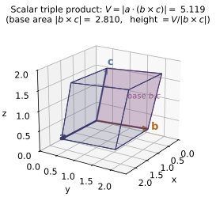
scalar_triple / box_volume ($V=5.119$). The shaded base on $b,c$ has area $|b\times c|=2.810$, so $V=$ base area $\times$ height; the product vanishes exactly when $a,b,c$ are coplanar.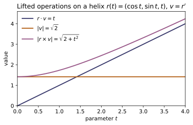
dot, norm, cross each return a function of $t$: $r\cdot v=t$, the speed $|v|=\sqrt2$, and the specific angular momentum magnitude $|r\times v|=\sqrt{2+t^2}$ -- the single lift decorator that seeds kinematics and angular momentum.Example problems
Prove a×(b×c) = b(a·c) − c(a·b) by writing out one component with the ε–δ identity εᵢⱼₖεᵢₗₘ = δⱼₗδₖₘ − δⱼₘδₖₗ. Check: vector_algebra._demo() proves it symbolically with SymPy.
Write the $i$-th component with the Levi-Civita symbol, using $(\mathbf a\times\mathbf b)_i=\varepsilon_{ijk}a_jb_k$ twice:
Cycle the first symbol, $\varepsilon_{ijk}=\varepsilon_{kij}$, so $\varepsilon_{kij}\varepsilon_{klm}=\delta_{il}\delta_{jm}-\delta_{im}\delta_{jl}$ (the ε–δ identity with shared index $k$). Then
Since this holds for every $i$, $\mathbf a\times(\mathbf b\times\mathbf c)=\mathbf b(\mathbf a\cdot\mathbf c)-\mathbf c(\mathbf a\cdot\mathbf b)$ — exactly the BAC–CAB identity vector_algebra._demo() confirms symbolically.
Find the angle between two body diagonals of a cube. Answer: arccos(1/3) ≈ 70.53°. Check: angle((1,1,1), (-1,1,1)) (place the cube corner at the origin). (Don't confuse with Griffiths Example 1.2, p.6, which does the face diagonals → 60°.)
With a unit cube cornered at the origin, two body diagonals point along $\mathbf a=(1,1,1)$ and $\mathbf b=(-1,1,1)$. Their dot product and magnitudes are
Hence $\cos\theta=\dfrac{\mathbf a\cdot\mathbf b}{|\mathbf a||\mathbf b|}=\dfrac{1}{\sqrt3\cdot\sqrt3}=\dfrac13$, so
This is exactly the value angle((1,1,1), (-1,1,1)) returns (≈ $70.5288^\circ$), which uses the numerically stable $\operatorname{atan2}(|\mathbf a\times\mathbf b|,\mathbf a\cdot\mathbf b)$ form.
Given a = (1,0,0), b = (1,1,0), c = (1,1,1): find the parallelepiped volume, then decide whether (2,1,0) lies in the plane of a and b. Answer: box_volume(a,b,c) = 1; are_coplanar((1,0,0),(1,1,0),(2,1,0)) → True.
The signed volume is the scalar triple product $\mathbf a\cdot(\mathbf b\times\mathbf c)=\det[\mathbf a\ \mathbf b\ \mathbf c]$:
so the parallelepiped volume is $|1|=1$. For coplanarity of $(1,0,0),(1,1,0),(2,1,0)$, all three vectors have zero $z$-component, so they lie in the $z=0$ plane and their triple product vanishes:
Thus box_volume(a,b,c) $=1$ and are_coplanar(...) $\to$ True, matching the stated answers.
The triangle with vertices P, Q, R has area ½|PQ × PR|. Compute it for P=(0,0,0), Q=(1,2,0), R=(0,3,4). Check: 0.5 * norm(cross((1,2,0),(0,3,4))).
The edge vectors from $P$ are $\overrightarrow{PQ}=(1,2,0)$ and $\overrightarrow{PR}=(0,3,4)$. Their cross product is
Its magnitude is $|(8,-4,3)|=\sqrt{64+16+9}=\sqrt{89}$, so the triangle area is
This matches 0.5 * norm(cross((1,2,0),(0,3,4))) ≈ $4.71699$.
For the helix r(t) = (cos t, sin t, t) with v = r′, w = v′: 1. Show the speed |v| is constant. (= √2) 2. Show the specific angular momentum ℓ(t) = r×v is not constant (no central force), and compute dℓ/dt = r×w. Check: build speed = norm(v), l = cross(r, v) as functions and sample them; compare [l(t+h)-l(t)]/h against cross(r, w)(t).
Differentiating, $\mathbf v=\mathbf r'=(-\sin t,\cos t,1)$ and $\mathbf w=\mathbf v'=(-\cos t,-\sin t,0)$. The speed is
constant. The specific angular momentum is
Its $x,y$ components vary with $t$, so $\boldsymbol\ell$ is not constant; differentiating (or using $\dot{\boldsymbol\ell}=\mathbf r\times\mathbf w$ since $\mathbf v\times\mathbf v=0$) gives
At $t=0.7$ both the finite difference and $\mathbf r\times\mathbf w$ give $(0.45095,-0.53539,0)$, confirming $\dot{\boldsymbol\ell}=\mathbf r\times\mathbf w\neq\mathbf 0$ (the helix feels a non-central force), exactly as the sampled cross(r, w) check shows.
Run the worked code: cd MA/MA-01_vector_algebra/code && python3 vector_algebra.py
MA-02 — Vector Calculus
Mathematics trunk · MA/MA-02_vector_calculus · open in the Teaching Network
The differential operators on fields — gradient, divergence, curl, Laplacian — and the integral theorems (fundamental theorem for gradients, the divergence / Gauss theorem, Stokes' theorem). Fields are plain functions; the operators return new fields by central finite differences, and the integral helpers let you check the theorems numerically. Reuses MA-01's dot/cross.
Key equations
Figures
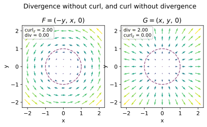
curl and divergence (central differences); the dashed circle is the unit loop used for the Stokes check.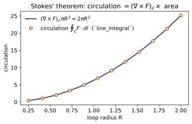
line_integral) matches the curl flux $(\nabla\times F)_z\,\pi R^2=2\pi R^2$ (line, with $(\nabla\times F)_z$ from curl) across every radius -- the integral theorem made quantitative.Example problems
Prove for any smooth f and F that ∇×(∇f) = 0 and ∇·(∇×F) = 0. Check: curl(gradient(f)) and divergence(curl(F)) return ~0 for any fields.
Both follow from equality of mixed partials, $\partial_i\partial_j=\partial_j\partial_i$. The $x$-component of $\nabla\times(\nabla f)$ is
and the $y,z$ components vanish the same way, so $\nabla\times(\nabla f)=\mathbf 0$. For the divergence of a curl,
and the six terms cancel in pairs (e.g. $\partial_x\partial_yF_z-\partial_y\partial_xF_z=0$), giving $0$. This is why curl(gradient(f)) and divergence(curl(F)) return $\sim0$ (to finite-difference roundoff) for any smooth fields.
For f = r = √(x²+y²+z²) show ∇r = r̂ = r/r, and for f = rⁿ show ∇(rⁿ) = n r^{n−1} r̂. Check: gradient(lambda x,y,z: (xx+yy+z*z)**0.5)(1,2,2) ≈ (1,2,2)/3.
With $r=\sqrt{x^2+y^2+z^2}$, differentiate $r^2=x^2+y^2+z^2$: $\,2r\,\partial_x r=2x$, so $\partial_x r=x/r$ (likewise $y/r,\,z/r$). Hence
By the chain rule $\nabla(r^n)=n\,r^{n-1}\nabla r=n\,r^{n-1}\hat{\mathbf r}$. At $(1,2,2)$, $r=\sqrt{1+4+4}=3$, so $\nabla r=(1,2,2)/3=(0.3333,0.6667,0.6667)$ — exactly what gradient(...)(1,2,2) returns.
For F = (−y, x, 0) compute ∇×F, then verify ∮F·dl around the unit circle equals ∬(∇×F)·dS over the disk. (Both = 2π.) Check: line_integral(F, circle, 0, 2pi) ≈ curl(F)(0,0,0)[2] pi.
The curl is
Parametrize the circle by $\mathbf l(t)=(\cos t,\sin t,0)$, so $d\mathbf l=(-\sin t,\cos t,0)\,dt$ and $\mathbf F\cdot d\mathbf l=(\sin^2t+\cos^2t)\,dt=dt$; thus $\oint\mathbf F\cdot d\mathbf l=\int_0^{2\pi}dt=2\pi$. The surface side, with $d\mathbf S=\hat{\mathbf z}\,dA$, is $\iint(0,0,2)\cdot\hat{\mathbf z}\,dA=2\,(\pi\cdot1^2)=2\pi$. Both equal $2\pi$, matching line_integral $=6.28319=$ curl(F)(0,0,0)[2]*pi.
For F = r = (x, y, z) show ∇·F = 3, hence the flux through a sphere of radius R is 3·(4/3)πR³ = 4πR³. (For R=1, 4π.) Check: surface_flux(F, sphere, 0, pi, 0, 2*pi) ≈ 4π.
The divergence is
By the divergence theorem the outward flux through the sphere of radius $R$ equals the volume integral
For $R=1$ this is $4\pi\approx12.566$. The midpoint-rule surface_flux returns $\approx12.568$, agreeing with $4\pi$ to grid resolution.
Show F = (yz, xz, xy) is conservative (curl = 0) with potential f = xyz, and that ∫F·dl from (0,0,0) to (1,1,1) is path-independent and equals 1. Check: curl(F) ≈ 0; line_integral(gradient(lambda x,y,z: xyz), path, 0, 1) ≈ 1.
Compute the curl of $\mathbf F=(yz,xz,xy)$:
so $\mathbf F$ is conservative. The scalar $f=xyz$ has $\nabla f=(yz,xz,xy)=\mathbf F$, so it is the potential. By the fundamental theorem for gradients the integral is path-independent:
Hence curl(F) $\approx\mathbf0$ and line_integral(gradient(...), path, 0, 1) $=1.0$.
Run the worked code: cd MA/MA-02_vector_calculus/code && python3 vector_calculus.py
MA-03 — Coordinate Systems
Mathematics trunk · MA/MA-03_coordinate_systems · open in the Teaching Network
Cartesian ↔ cylindrical ↔ spherical transforms, the orthonormal curvilinear basis vectors, the scale factors h_i, and the Jacobian volume elements. Reuses MA-01's dot/cross/norm to verify the bases are orthonormal and right-handed.
Conventions: cylindrical (ρ, φ, z); spherical (r, θ, φ) with θ the polar angle from +z ∈ [0, π] and φ the azimuth ∈ (−π, π].
Key equations
Figures
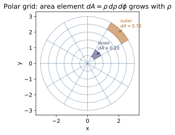
cyl_to_cart: circles $\rho=$const and rays $\phi=$const. The area element is $dA=\rho\,d\rho\,d\phi$ (the Jacobian cyl_jacobian$=\rho$), so for equal $\Delta\rho,\Delta\phi$ the outer cell (orange, $\rho\approx2.75$) has about 3.7 times the area of the inner one (blue, $\rho\approx0.75$) -- the area grows in proportion to $\rho$.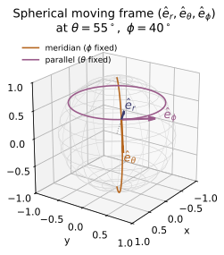
sph_basis. At a point $P(r,\theta,\phi)$ the orthonormal right-handed triad $(\hat e_r,\hat e_\theta,\hat e_\phi)$ is tangent to the coordinate curves: $\hat e_r$ along the radius, $\hat e_\theta$ along the meridian ($\phi$ fixed, orange), $\hat e_\phi$ along the parallel ($\theta$ fixed, purple). Unlike fixed Cartesian axes, the basis depends on position.Example problems
Derive ê_r, ê_θ, ê_φ in Cartesian components and show they are orthonormal and right-handed (ê_r×ê_θ = ê_φ). Check: sph_basis(theta, phi) then MA-01 dot/cross/norm.
Each unit vector is the normalized derivative of $\mathbf r=r(s_\theta c_\phi,\,s_\theta s_\phi,\,c_\theta)$ along its coordinate, $\hat{\mathbf e}_i=\tfrac1{h_i}\partial\mathbf r/\partial q_i$ (s,c = sin,cos):
with magnitudes $h_r=1,\,h_\theta=r,\,h_\phi=rs_\theta$, giving exactly the notes' $\hat{\mathbf e}_r,\hat{\mathbf e}_\theta,\hat{\mathbf e}_\phi$. Orthonormal: $|\hat{\mathbf e}_r|^2=s_\theta^2(c_\phi^2+s_\phi^2)+c_\theta^2=1$, and $\hat{\mathbf e}_r\!\cdot\!\hat{\mathbf e}_\theta=s_\theta c_\theta(c_\phi^2+s_\phi^2)-c_\theta s_\theta=0$ (similarly the other pairs vanish). Right-handed:
So sph_basis returns three vectors with norm $=1$, pairwise dot $=0$, and cross(e_r,e_th) $=$ e_ph.
Using dV = r² sinθ dr dθ dφ, integrate to get V = (4/3)πR³. Check: sph_jacobian(r, theta) is the integrand factor; numerically integrate it over r∈[0,R], θ∈[0,π], φ∈[0,2π].
With $dV=r^2\sin\theta\,dr\,d\theta\,d\phi$ the integrand separates, so the triple integral is a product of three one-dimensional integrals:
The factor $r^2\sin\theta$ is precisely sph_jacobian(r, theta). Numerically integrating it over the box for $R=1$ gives $V\approx 4.18878\approx \tfrac43\pi(1)^3=4.18879$.
Show that for any orthogonal system the volume element factor equals the product of the scale factors, J = h₁h₂h₃, and verify for cylindrical (J=ρ) and spherical (J=r²sinθ). Check: compare _scale_factors product to _jacobian.
An orthogonal coordinate change spans a small box with edge vectors $h_i\,dq_i\,\hat{\mathbf e}_i$ along the orthonormal directions $\hat{\mathbf e}_i$. Its volume is the scalar triple product
since for a right-handed orthonormal triad $\hat{\mathbf e}_1\cdot(\hat{\mathbf e}_2\times\hat{\mathbf e}_3)=1$. Hence $J=h_1h_2h_3$. Cylindrical $(1,\rho,1)$ gives $J=\rho$; spherical $(1,r,r\sin\theta)$ gives $J=r^2\sin\theta$ — exactly why the product of _scale_factors equals _jacobian.
The constant Cartesian vector ẑ has spherical components (cosθ, −sinθ, 0). Confirm, and check that converting to spherical and back is the identity. Check: vector_to_spherical(0,0,1, theta, phi) then vector_from_spherical(...).
Components in the spherical basis are projections, $v_i=\hat{\mathbf z}\cdot\hat{\mathbf e}_i$. With $\hat{\mathbf z}=(0,0,1)$ and the basis from P1,
so $\hat{\mathbf z}\to(\cos\theta,-\sin\theta,0)$. Reassembling, the $z$-component is $c_\theta\,c_\theta+(-s_\theta)(-s_\theta)=c_\theta^2+s_\theta^2=1$ and the $x,y$ parts cancel, returning $\hat{\mathbf z}$. At $\theta=50^\circ$, vector_to_spherical(0,0,1,…) gives $(0.642788,-0.766044,0)$ and vector_from_spherical returns $(0,0,1)$.
Show that any point's position vector has spherical components (r, 0, 0), i.e. ê_r points along r. Check: for random p, sph_basis(theta, phi)[0] equals unit(p) from MA-01 (this is a test in the suite).
The Cartesian position of a point at $(r,\theta,\phi)$ is, by the spherical map,
Projecting onto the basis: $v_r=\mathbf p\cdot\hat{\mathbf e}_r=r\,|\hat{\mathbf e}_r|^2=r$, while $v_\theta=r\,\hat{\mathbf e}_r\cdot\hat{\mathbf e}_\theta=0$ and $v_\phi=r\,\hat{\mathbf e}_r\cdot\hat{\mathbf e}_\phi=0$ by orthonormality — so the components are $(r,0,0)$. Equivalently $\hat{\mathbf e}_r=\mathbf p/|\mathbf p|=$ unit(p); e.g. for $\mathbf p=(1.3,-0.7,2.1)$ both equal $(0.50641,-0.27268,0.81804)$, matching sph_basis(theta, phi)[0].
Run the worked code: cd MA/MA-03_coordinate_systems/code && python3 coordinates.py
MA-04 — Linear Algebra
Mathematics trunk · MA/MA-04_linear_algebra · open in the Teaching Network
Matrix operations; determinant, linear solve and inverse by Gaussian elimination (Boas: "row reduction"); and the eigenvalue problem for real symmetric matrices solved from scratch with Jacobi rotations — the algorithm behind principal axes and the diagonalization of observables. Pure Python; for large or general/complex problems use numpy.linalg.
Key equations
Figures
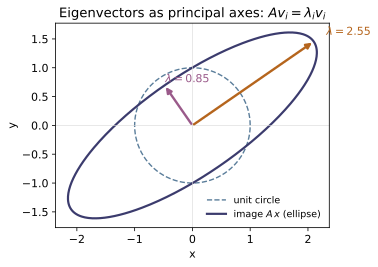
eig_symmetric), since $A v_i=\lambda_i v_i$.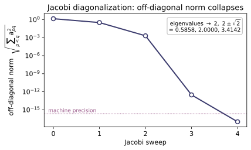
eig_symmetric works: cyclic Jacobi rotations drive the off-diagonal Frobenius norm of $S=\mathrm{tridiag}(1,2,1)$ to zero. The decay is super-linear (note the log scale), reaching machine precision within a few sweeps; the converged diagonal reproduces the exact eigenvalues $2,\,2\pm\sqrt2$, matching the module's eig_symmetric.Example problems
Solve the system 4x+3y=10, 6x+3y=12 by row reduction, then find the inverse of [[4,3],[6,3]] and confirm A·A⁻¹ = I. Check: solve([[4,3],[6,3]], [10,12]), inverse(...), matmul(A, inverse(A)).
Row-reduce the augmented matrix; subtracting the equations ($R_2-R_1$) gives $2x=2$, so $x=1$, and back-substitution $4(1)+3y=10$ gives $y=2$. For the inverse, the determinant is $\det A=4\cdot3-3\cdot6=-6\neq0$, and for a $2\times2$ matrix $A^{-1}=\frac1{\det A}\begin{pmatrix}d&-b\\-c&a\end{pmatrix}$:
So $(x,y)=(1,2)$ — exactly solve(...) $=[1,2]$, inverse(...) $=[[-0.5,0.5],[1,-0.667]]$, and matmul(A, inverse(A)) $=I$.
Show det[[1,2],[2,4]] = 0 (rows dependent ⇒ no inverse), and det of a diagonal matrix is the product of the diagonal. Check: det(...).
Directly, $\det\begin{pmatrix}1&2\\2&4\end{pmatrix}=1\cdot4-2\cdot2=0$, because row 2 is $2\times$ row 1 — the rows are linearly dependent, so the matrix collapses volume to zero and cannot be inverted. For a diagonal matrix the off-diagonal entries are already zero, so Gaussian elimination touches nothing and the determinant is just the product of pivots:
This matches det([[1,2],[2,4]]) $=0$ and det([[2,0,0],[0,3,0],[0,0,5]]) $=30$.
For S = [[2,1],[1,2]] solve det(S−λI)=0 → λ=1,3, find the eigenvectors, and verify they are orthogonal. Check: eig_symmetric([[2,1],[1,2]]); confirm S·v = λv.
The characteristic equation is $\det(S-\lambda I)=(2-\lambda)^2-1=\lambda^2-4\lambda+3=0$, i.e. $(\lambda-1)(\lambda-3)=0$, so $\lambda=1,3$. For $\lambda=1$, $(S-I)\mathbf v=\begin{pmatrix}1&1\\1&1\end{pmatrix}\mathbf v=0$ gives $\mathbf v\propto(1,-1)$; for $\lambda=3$, $(S-3I)\mathbf v=\begin{pmatrix}-1&1\\1&-1\end{pmatrix}\mathbf v=0$ gives $\mathbf v\propto(1,1)$. Normalizing,
Orthogonality is guaranteed because $S$ is symmetric. eig_symmetric returns eigenvalues $\approx[1,3]$ with these orthonormal columns (dot product $0$), and $S\mathbf v=\lambda\mathbf v$ holds.
Given a symmetric inertia tensor (e.g. I = [[2,−1,0],[−1,2,0],[0,0,3]]), diagonalize it: the eigenvalues are the principal moments and the eigenvectors are the principal axes. Confirm A = QΛQᵀ with Q orthogonal. This is exactly the eigenproblem ~CM-13 will use. Check: eig_symmetric(I), reconstruct(vals, vecs).
The tensor is block-diagonal: the $z$-axis decouples (eigenvalue $3$, axis $(0,0,1)$), while the $xy$-block $\begin{pmatrix}2&-1\\-1&2\end{pmatrix}$ has eigenvalues $2\pm1=1,3$ with axes $\tfrac1{\sqrt2}(1,1)$ and $\tfrac1{\sqrt2}(1,-1)$. So the principal moments are $\{1,3,3\}$, and as a check $\sum\lambda_i=1+3+3=7=\operatorname{tr}I$ and $\prod\lambda_i=1\cdot3\cdot3=9=\det I$. Stacking the orthonormal axes as columns of $Q$ ($Q^{\mathsf T}Q=I$),
eig_symmetric(I) returns eigenvalues $\approx[1,3,3]$ and reconstruct(vals, vecs) rebuilds $I$ exactly.
The 90° rotation [[0,−1],[1,0]] has no real eigenvectors. Solve λ²+1=0 → λ=±i. Check: eigvals_2x2([[0,-1],[1,0]]) → (i, −i). (Contrast: a symmetric matrix always has real eigenvalues — P3.)
Here $\operatorname{tr}A=0$ and $\det A=(0)(0)-(-1)(1)=1$, so the characteristic polynomial $\lambda^2-(\operatorname{tr}A)\lambda+\det A$ becomes
The eigenvalues are pure imaginary because a real $90^\circ$ rotation sends every real direction to a perpendicular one — no real vector maps to a scalar multiple of itself. eigvals_2x2([[0,-1],[1,0]]) returns $(i,-i)$. Contrast P3: a real symmetric matrix always has real eigenvalues and a real orthonormal eigenbasis.
Run the worked code: cd MA/MA-04_linear_algebra/code && python3 linalg.py
MA-05 — Complex Numbers
Mathematics trunk · MA/MA-05_complex_numbers · open in the Teaching Network
Polar form (modulus & argument), Euler's formula e^{iθ}=cosθ+i sinθ, De Moivre's theorem, the n distinct nth roots of a complex number, and the principal branch of √ and log (with the negative-real-axis cut). Python already has complex/cmath; this module exposes the mechanics explicitly. Pure stdlib.
Key equations
Figures
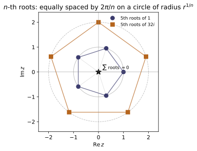
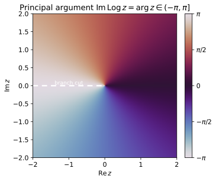
Example problems
From e^{iθ}=cosθ+i sinθ, evaluate e^{iπ}, e^{iπ/2}, e^{2πi}, and confirm e^{iπ}+1=0. Check: euler(math.pi), euler(math.pi/2).
Substitute each angle into Euler's formula $e^{i\theta}=\cos\theta+i\sin\theta$:
Hence $e^{i\pi}+1=-1+1=0$ — Euler's identity. (euler(math.pi) returns $-1$ up to a $10^{-16}$ floating-point imaginary part, since $\sin\pi$ is not exactly $0$ numerically.)
Use De Moivre with n=2 to derive cos2θ = cos²θ − sin²θ and sin2θ = 2 sinθ cosθ. Check: compare de_moivre(theta, 2) to euler(theta)**2.
De Moivre's theorem gives $(\cos\theta+i\sin\theta)^2=\cos 2\theta+i\sin 2\theta$. Expand the left side directly:
Equating real and imaginary parts with $\cos 2\theta+i\sin 2\theta$:
This is exactly why de_moivre(theta, 2) equals euler(theta)**2.
Find the cube roots of 1 and the fourth roots of 1; show each set sums to zero and lies on the unit circle. Check: roots_of_unity(3), roots_of_unity(4); sum(roots_of_unity(n)) ≈ 0.
Writing $1=e^{2\pi i k}$, the $n$th roots are $\omega_k=e^{2\pi i k/n}$, $k=0,\dots,n-1$ — equally spaced on the unit circle ($|\omega_k|=1$). For $n=3$:
For $n=4$: $\;1,\;i,\;-1,\;-i$. Each set sums to zero because it is a finite geometric series: $\sum_{k=0}^{n-1}\omega_k=\dfrac{\omega^{\,n}-1}{\omega-1}=0$ (with $\omega=e^{2\pi i/n}$, since $\omega^n=1$ and $\omega\ne1$ for $n\ge2$). Matches sum(roots_of_unity(n)) ≈ 0.
Find all three cube roots of 8i and verify each, cubed, returns 8i. Check: nth_roots(complex(0,8), 3); each w**3 ≈ 8i.
Put $8i$ in polar form: $8i=8\,e^{i\pi/2}$. Its cube roots are
i.e.
Cubing any one restores the modulus $2^3=8$ and triples the argument back to $\pi/2$ (mod $2\pi$), so $w_k^3=8i$. These are the values nth_roots(complex(0,8), 3) returns.
Compute the principal √(−1) = i. Then evaluate √ just above and just below the negative real axis and observe the sign flip in the imaginary part — the discontinuity across the cut. Check: principal_sqrt(complex(-1, +1e-9)) vs principal_sqrt(complex(-1, -1e-9)).
The principal square root uses the principal argument $\arg z\in(-\pi,\pi]$: $\sqrt z=\sqrt{|z|}\,e^{i\arg z/2}$. For $z=-1$, $\arg z=\pi$, so
Approaching the negative real axis from above ($z=-1+i\varepsilon$), $\arg z\to\pi^-$, giving $\sqrt z\to e^{i\pi/2}=i$; from below ($z=-1-i\varepsilon$), $\arg z\to-\pi^+$, giving $\sqrt z\to e^{-i\pi/2}=-i$. The imaginary part jumps $+i\to-i$ across the cut — the $2\pi$ ambiguity of $\arg$ halved to a sign by $\sqrt{\ }$. (principal_sqrt returns $\approx +i$ and $\approx -i$ for the two cases.)
Run the worked code: cd MA/MA-05_complex_numbers/code && python3 complex_numbers.py
MA-06 — Complex Analysis
Mathematics trunk · MA/MA-06_complex_analysis · open in the Teaching Network
Analytic functions and the Cauchy–Riemann conditions; contour integration; Cauchy's integral theorem & formula; residues and the residue theorem; the winding number. Complex functions are f(z); contours are gamma(t)->complex, and contour_integral is the spectrally-accurate trapezoid on a closed loop.
Key equations
Figures
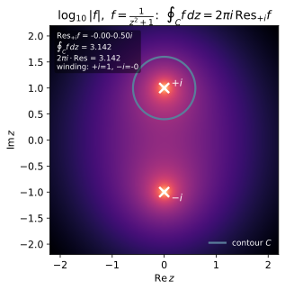
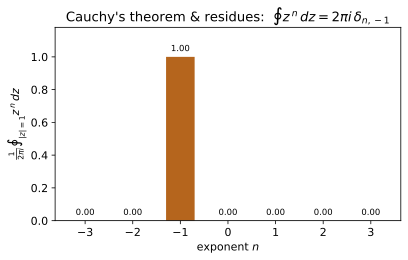
Example problems
Use Cauchy–Riemann to show f(z)=z² is analytic everywhere but f(z)=z̄ is nowhere analytic. Check: cauchy_riemann(lambda z: z*z, ...) (True) vs cauchy_riemann(lambda z: z.conjugate(), ...) (False).
Write $z=x+iy$ and split each map into $f=u+iv$. For $f(z)=z^2=(x^2-y^2)+i\,(2xy)$ we read off $u=x^2-y^2,\ v=2xy$, so
and both Cauchy–Riemann equations hold for every $(x,y)$ — $z^2$ is analytic everywhere. For $f(z)=\bar z=x-iy$ we have $u=x,\ v=-y$, giving $u_x=1$ but $v_y=-1$, so $u_x\neq v_y$ at every point and C–R fails identically: $\bar z$ is nowhere analytic. This is why cauchy_riemann(lambda z: z*z, ...) returns True while cauchy_riemann(lambda z: z.conjugate(), ...) returns False.
Parametrize the unit circle z=e^{iθ} and evaluate ∮ dz/z directly; then show ∮ zⁿ dz = 0 for every other integer n. Check: contour_integral(lambda z: 1/z, circle(0,1), 0, 2pi) ≈ 2πi; contour_integral(lambda z: zz, ...) ≈ 0.
Parametrize the unit circle as $z=e^{i\theta}$, $\theta\in[0,2\pi]$, so $dz=ie^{i\theta}\,d\theta$. Then
For any other integer $n\neq-1$,
since $e^{i(n+1)2\pi}=1$. Only the $n=-1$ term survives — the source of every residue. Numerically contour_integral(1/z,…) $\approx 6.2832\,i=2\pi i$ and contour_integral(z*z,…) $\approx 0$.
Verify f(0) = (1/2πi)∮ eᶻ/z dz around the unit circle equals e⁰ = 1. Check: cauchy_integral_formula(cmath.exp, 0) ≈ 1.
Cauchy's integral formula says that for $f$ analytic inside the loop, $f(z_0)=\dfrac{1}{2\pi i}\oint\dfrac{f(z)}{z-z_0}\,dz$. Take $f(z)=e^z$ (entire, hence analytic inside the unit circle) and $z_0=0$:
The boundary integral reproduces the interior value at the centre — the analytic mean-value property. cauchy_integral_formula(cmath.exp, 0) returns $\approx 1.0000000009$, the $10^{-9}$ residual being the trapezoidal discretization error, confirming the formula.
Find the residues of 1/(z²+1) at z=±i and confirm Res = ±1/2i. Then check the residue theorem: ∮ around \|z\|=2 (enclosing both) = 2πi·(sum) = 0. Check: residue_at(lambda z: 1/(z*z+1), 1j) ≈ −0.5j.
Factor $\dfrac{1}{z^2+1}=\dfrac{1}{(z-i)(z+i)}$; both poles are simple, so $\operatorname{Res}_{z_0}f=\lim_{z\to z_0}(z-z_0)f(z)$ gives
The two residues sum to zero, so by the residue theorem $\oint_{|z|=2}\dfrac{dz}{z^2+1}=2\pi i\,(-\tfrac12 i+\tfrac12 i)=0$. The code confirms residue_at(lambda z: 1/(z*z+1), 1j) $\approx -0.5j$ (and $+0.5j$ at $-i$), i.e. $\pm 1/2i$.
The residue theorem gives ∫_{−∞}^{∞} dx/(1+x²) = π (close the contour in the upper half-plane; only the pole at z=i contributes, residue 1/2i, so 2πi·(1/2i)=π). Check: compare to 2piresidue_at(lambda z: 1/(zz+1), 1j) 1j → π.
Close the real axis with a large semicircle of radius $R$ in the upper half-plane. On the arc $|f|\sim R^{-2}$ while its length is $\sim\pi R$, so that contribution $\to 0$ as $R\to\infty$ and the closed-contour integral equals the real-line integral. Only the pole $z=i$ lies inside, with $\operatorname{Res}_i\dfrac{1}{z^2+1}=\dfrac{1}{2i}$, so
The check 2piresidue_at(…,1j)*1j assembles $2\pi i\cdot\operatorname{Res}_i$ (the extra 1j supplies the $i$ of $2\pi i$), returning $\approx 3.14159=\pi$.
Run the worked code: cd MA/MA-06_complex_analysis/code && python3 complex_analysis.py
MA-07 — Ordinary Differential Equations
Mathematics trunk · MA/MA-07_ode · open in the Teaching Network
Numerical integrators — Euler and RK4 — for scalar, vector and second-order systems, plus the exact evolution of a linear system dx/dt = A x by diagonalization (reusing ~MA-04's eigensolver). The analytic solution families (separable, linear first-order, constant-coefficient second order, forced) are documented with citations in notes.md.
Key equations
Figures
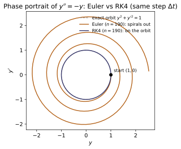
![Flow of $\dot{\mathbf{x}}=A\mathbf{x}$ for $A=[[0,1],[1,0]]$. Diagonalizing with the MA-04 eigensolver gives eigenvalues $\lambda=\pm1$; the exact solution $\mathbf{x}(t)=\sum_i(\mathbf{v}_i\!\cdot\!\mathbf{x}_0)e^{\lambda_i t}\mathbf{v}_i$ (purple streamlines, from linear_evolve_symmetric) is a saddle that grows along the $\lambda=+1$ eigenvector and decays along $\lambda=-1$. RK4 of the same system (blue dots) lands right on it — these eigen-modes are the normal modes.](MA/MA-07_ode/figures/fig2_linear_saddle.svg)
Example problems
Solve y′ = ky analytically (y = y₀e^{kt}), then integrate numerically and compare at t = 1 for k = 1 and k = −2. Check: integrate(lambda t,y:[k*y[0]], [1.0], 0, 1, 1000) vs exp(k).
The equation $y'=ky$ is separable: $\frac{dy}{y}=k\,dt$. Integrating both sides, $\ln y = kt + C$, so $y=y_0e^{kt}$ — exponential growth ($k>0$) or decay ($k<0$). With $y_0=1$,
For $k=1$: $e^{1}=2.71828183$; for $k=-2$: $e^{-2}=0.13533528$. RK4 over 1000 steps reproduces both to 8 digits, so integrate(lambda t,y:[k*y[0]], [1.0], 0, 1, 1000) matches exp(k).
Solve y″ + y = 0 with y(0)=1, y′(0)=0 → y = cos t. Reduce to a first-order system and integrate to t = 2π; confirm y(2π)=1, y′(2π)=0. Check: integrate(second_order_system(lambda t,y,v:-y), [1,0], 0, 2*pi, 4000).
The characteristic equation $\lambda^2+1=0$ gives $\lambda=\pm i$, so $y=A\cos t+B\sin t$. The conditions $y(0)=1\Rightarrow A=1$ and $y'(0)=0\Rightarrow B=0$ leave $y=\cos t$. Setting $v=y'$ reduces the equation to the first-order system
which is exactly what second_order_system builds. At $t=2\pi$, $y=\cos2\pi=1$ and $y'=-\sin2\pi=0$ — the integration returns $y(2\pi)=1.000000$, $y'(2\pi)=0.000000$.
For y″ + b y′ + y = 0, find b for which the roots of λ²+bλ+1=0 are real (over-damped), equal (critical, b=2), or complex (under-damped). Integrate b=0.4 and watch it ring down. Check: second_order_system(lambda t,y,v: -0.4*v - y).
Trying $y=e^{\lambda t}$ gives the characteristic equation $\lambda^2+b\lambda+1=0$, with roots $\lambda=\tfrac{-b\pm\sqrt{b^2-4}}{2}$. The discriminant $b^2-4$ sets the regime (taking $b>0$): real distinct roots — over-damped — for $b>2$; a repeated root $\lambda=-1$ — critically damped — at $b=2$; complex roots — under-damped — for $0<b<2$. With $b=0.4$, $\lambda=-0.2\pm i\sqrt{0.96}$, a decaying oscillation $e^{-0.2t}\cos(\sqrt{0.96}\,t-\phi)$. Integrating to $t=20$ it rings down to $y(20)=0.015985$, confirming the under-damped envelope.
For y″ + ω₀²y = cos(ωt), show the amplitude blows up as ω→ω₀. Integrate near and off resonance and compare the growth. Check: drive term in the RHS of integrate.
Seek a particular solution $y_p=C\cos(\omega t)$ of $y''+\omega_0^2y=\cos(\omega t)$; substituting gives $(\omega_0^2-\omega^2)C=1$, so
whose amplitude $1/|\omega_0^2-\omega^2|\to\infty$ as $\omega\to\omega_0$. At exact resonance this ansatz fails and the solution is secular, $y_p=\dfrac{t\sin(\omega_0 t)}{2\omega_0}$, growing linearly in $t$. With $\omega_0=1$ and zero initial data, integrating to $t=40$ gives $\max|y|\approx19.6$ on resonance ($\omega=1$, the $\sim t/2$ ramp) versus only $\approx1.6$ off resonance ($\omega=1.5$, bounded beats of amplitude $\sim2/|1-\omega^2|$) — adding the drive term to the RHS makes the blow-up plain.
~MA-04, ~CM-16For dx/dt = A x with A = [[0,1],[1,0]] (symmetric), diagonalize and write x(t) = Σ(vᵢ·x₀)e^{λᵢt}vᵢ; show x₀=(1,0) gives (cosh t, sinh t). Check: linear_evolve_symmetric(A, [1,0], t) vs integrate(linear_rhs(A), [1,0], 0, t, 3000).
The symmetric matrix $A=\begin{pmatrix}0&1\\1&0\end{pmatrix}$ has eigenvalues $\lambda_\pm=\pm1$ with orthonormal eigenvectors $\mathbf v_\pm=\tfrac1{\sqrt2}(1,\pm1)$. Projecting the initial data, $\mathbf v_\pm\!\cdot\!\mathbf x_0=\tfrac1{\sqrt2}$ for $\mathbf x_0=(1,0)$, and each eigen-mode evolves independently as $e^{\lambda_i t}$:
Diagonalization decouples the system into two scalar exponentials. At $t=0.7$, $(\cosh0.7,\sinh0.7)=(1.255169,0.758584)$, and linear_evolve_symmetric(A, [1,0], 0.7) reproduces this, matching integrate(linear_rhs(A), [1,0], 0, t, 3000) to all six digits.
Run the worked code: cd MA/MA-07_ode/code && python3 ode.py
MA-08 — Partial Differential Equations
Mathematics trunk · MA/MA-08_pde · open in the Teaching Network
The three classic linear PDEs solved by finite differences, each checkable against its separation-of-variables (Fourier-mode) solution: - heat / diffusion u_t = α u_xx (explicit FTCS), - wave u_tt = c² u_xx (leapfrog), - Laplace u_xx + u_yy = 0 (Gauss–Seidel relaxation).
Key equations
Figures
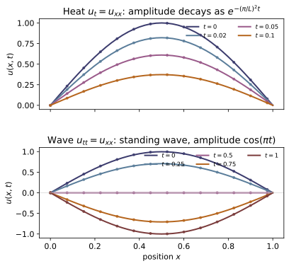
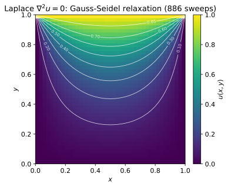
Example problems
On [0,L] with u(0)=u(L)=0 and u(x,0)=sin(πx/L), separate variables to get u(x,t)=sin(πx/L)e^{−α(π/L)²t}. Check: heat_1d started from that initial condition matches heat_mode(L, alpha, 1) at later t.
Seek $u(x,t)=X(x)T(t)$. Substituting into $u_t=\alpha u_{xx}$ and dividing by $\alpha XT$ gives $\dfrac{T'}{\alpha T}=\dfrac{X''}{X}$. The two sides depend on different variables, so each equals a constant $-k^2$. The spatial equation $X''=-k^2X$ with $X(0)=X(L)=0$ forces $k=n\pi/L$, $X=\sin\frac{n\pi x}{L}$; the temporal equation $T'=-\alpha k^2 T$ gives $T=e^{-\alpha k^2 t}$. The initial shape $\sin(\pi x/L)$ is already the $n=1$ mode, so
This is exactly heat_mode(L, alpha, 1); starting heat_1d from $\sin(\pi x/L)$ reproduces it — at $u(0.5,0.1)$ the FTCS solver returns $0.37272$ vs $0.37271$ from the mode.
For u_tt=c²u_xx with fixed ends and u(x,0)=sin(πx/L), u_t(x,0)=0, show u=sin(πx/L)cos(cπt/L). Check: wave_1d(u0, [0]*N, c, dx, dt, n) vs wave_mode(L, c, 1).
Separation $u=X(x)T(t)$ in $u_{tt}=c^2u_{xx}$ gives $\dfrac{T''}{c^2T}=\dfrac{X''}{X}=-k^2$. As in P1 the fixed ends force $X=\sin\frac{n\pi x}{L}$ with $k=n\pi/L$. The temporal equation $T''=-c^2k^2T$ now oscillates instead of decaying: $T=A\cos(ckt)+B\sin(ckt)$. The zero initial velocity $u_t(x,0)=0$ kills the sine ($B=0$), and $u(x,0)=\sin(\pi x/L)$ selects $n=1$ with $A=1$:
This is wave_mode(L, c, 1). At $t=0.2$ (with $c=L=1$), $\cos(0.2\pi)=0.80902$, matching wave_1d, which returns $0.80902$.
Solve ∇²u=0 with a harmonic boundary u=x²−y² and show the interior reproduces x²−y² exactly (the 5-point stencil is exact for quadratics). Check: laplace_2d interior equals x²−y².
First, $u=x^2-y^2$ is harmonic: $\nabla^2u=u_{xx}+u_{yy}=2-2=0$. The Gauss–Seidel update sets each interior node to the four-neighbour average; for $u=x^2-y^2$ at spacing $h$,
so $\tfrac14\big[\,\cdot\,+\,\cdot\,+\,\cdot\,+\,\cdot\,\big]=\tfrac14(4x^2-4y^2)=x^2-y^2=u(x,y)$, the $+2h^2$ and $-2h^2$ cancelling. Thus $x^2-y^2$ is an exact fixed point of the 5-point stencil, so relaxation reproduces it to machine precision: laplace_2d returns $u(0.5,0.5)=-0.000000$ against the exact $0$.
~MA-09For an initial condition that is a sum of sine modes, the coefficients bₙ are extracted by multiplying by sin(mπx/L) and integrating (orthogonality). Predict the decay of each mode and confirm a two-mode initial condition splits into two exponentials. Check: heat_1d from sin(πx)+0.5 sin(3πx); compare modes.
Write the initial data as $f(x)=\sum_n b_n\sin\frac{n\pi x}{L}$. Multiply by $\sin\frac{m\pi x}{L}$ and integrate, using orthogonality $\int_0^L\sin\frac{n\pi x}{L}\sin\frac{m\pi x}{L}\,dx=\tfrac{L}{2}\delta_{nm}$:
Each mode then carries its own decay $e^{-\alpha(n\pi/L)^2t}$, so the rate scales as $n^2$. For $f=\sin(\pi x)+\tfrac12\sin(3\pi x)$ on $[0,1]$ ($\alpha=1$),
The $n=3$ mode decays $9\times$ faster: by $t=0.05$ its amplitude is only $0.96\%$ of the fundamental. heat_1d from sin(πx)+0.5 sin(3πx) matches this two-exponential split to $3\times10^{-4}$.
Show that FTCS for the heat equation is unstable once r = α dt/dx² > ½ by running heat_1d with a too-large dt and watching it blow up; then halve dt and see it behave. (A hands-on look at the CFL/stability condition in notes.md §3.)
Von Neumann analysis: insert a Fourier mode $u_j^n=\xi^n e^{ikj\Delta x}$ into the FTCS update $u_j^{n+1}=u_j^n+r\,(u_{j+1}-2u_j+u_{j-1})$, $r=\alpha\,\Delta t/\Delta x^2$. The amplification factor is
Stability needs $|\xi|\le1$ for every $k$; the worst case $\sin^2=1$ gives $1-4r\ge-1$, i.e. $r\le\tfrac12$. With $\Delta x=0.05,\ \alpha=1$: $r=0.6$ ($dt=0.0015$) blows up to $\max|u|\approx7.6\times10^{10}$ after 200 steps, whereas halving to $r=0.3$ leaves a smooth decaying $\max|u|\approx0.227$ — exactly the CFL threshold of notes.md §3.
Run the worked code: cd MA/MA-08_pde/code && python3 pde.py
MA-09 — Fourier Series & Transforms
Mathematics trunk · MA/MA-09_fourier · open in the Teaching Network
The discrete Fourier transform and its inverse, a radix-2 FFT, the DFT bin frequencies, and numerical Fourier-series coefficients with reconstruction. The DFT kernel e^{−2πi kn/N} = euler(−2π kn/N) is a direct reuse of ~MA-05.
Key equations
Figures
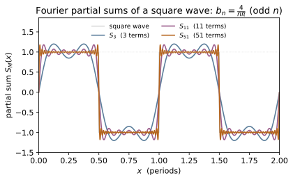
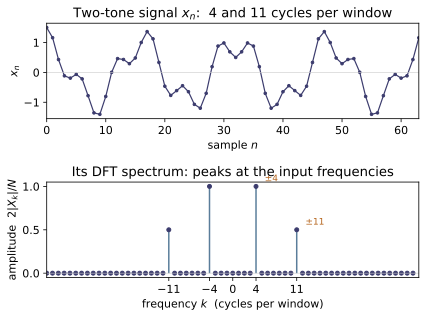
Example problems
Compute the coefficients of the odd square wave (period 1) and show bₙ = 4/(nπ) for odd n, 0 otherwise (and all aₙ = 0). Check: fourier_series_coeffs(sq, 1, 5).
The odd square wave has $f(x)=+1$ on $(0,\tfrac12)$ and $-1$ on $(\tfrac12,1)$. Being odd, every $a_n=0$ (and $a_0=0$). With $P=1$ the sine coefficient is
Each integral gives $\tfrac{1-\cos\pi n}{2\pi n}$ and $\tfrac{\cos\pi n-1}{2\pi n}$, so
Numerically fourier_series_coeffs(sq, 1, 5) returns $a_0=0$, all $a_n=0$, and $b=[1.2732,0,0.4244,0,0.2546]$, exactly $4/(\pi n)=\{1.2732,0.4244,0.2546\}$ for $n=1,3,5$.
Verify ∫₀^P sin(2πmx/P)sin(2πnx/P)dx = (P/2)δₘₙ — the orthogonality that isolates each coefficient. Then reconstruct a two-mode signal exactly. Check: series_value of the coefficients of 0.5 + cos(2πx) + 0.3 sin(4πx).
Use the product-to-sum identity $\sin A\sin B=\tfrac12[\cos(A-B)-\cos(A+B)]$ with $A=\tfrac{2\pi m x}{P},\,B=\tfrac{2\pi n x}{P}$:
For $m\ne n$ both cosines complete whole cycles and integrate to $0$; for $m=n$ the first term is $\cos 0=1$ giving $\tfrac12P$, the second still vanishes — hence $\tfrac{P}{2}\delta_{mn}$. This orthogonality is what makes "Fourier's trick" pick out one coefficient. The signal $0.5+\cos(2\pi x)+0.3\sin(4\pi x)$ ($P=1$) is already a finite series: $a_0/2=0.5,\ a_1=1,\ b_2=0.3$, all others zero — and indeed fourier_series_coeffs returns $a_0=1,\,a_1=1,\,b_2=0.3$, so series_value reconstructs it with zero error.
Sample cos(2π·k₀·n/N) and show the DFT has nonzero bins only at k₀ and N−k₀, each of magnitude N/2. Check: dft([cos(2pik0*n/N) for n in range(N)]).
Write the sample with Euler's formula, $x_n=\cos\tfrac{2\pi k_0 n}{N}=\tfrac12\big(e^{2\pi i k_0 n/N}+e^{-2\pi i k_0 n/N}\big)$, and feed it to the DFT kernel:
The geometric sum $\sum_{n=0}^{N-1}e^{2\pi i j n/N}=N$ when $j\equiv 0\ (\mathrm{mod}\ N)$ and $0$ otherwise. So only $k=k_0$ and $k=N-k_0$ (since $-k_0\equiv N-k_0$) survive, each with $X_k=N/2$. For $N=16,\,k_0=2$, dft gives $|X_2|=|X_{14}|=8.0=N/2$ and all other bins $0$.
For any signal show Σₙ|xₙ|² = (1/N)Σₖ|Xₖ|² (energy is conserved between time and frequency). Check: compare the two sums for a random complex x and its dft.
Insert the inverse DFT $x_n=\tfrac1N\sum_k X_k e^{2\pi i k n/N}$ into $\sum_n|x_n|^2=\sum_n x_n^{*}x_n$ and swap the order of summation:
The inner sum is exactly the DFT $X_k$, so its conjugate times $X_k$ gives $|X_k|^2$. Energy is conserved up to the $1/N$ convention of this transform. Numerically, for a random complex length-8 x, both $\sum_n|x_n|^2$ and $\tfrac1N\sum_k|X_k|^2$ equal $12.404901$.
Confirm the radix-2 FFT returns the same array as the direct DFT for N = 2,4,8,16, and note it is O(N log N) vs O(N²). Check: fft(x) ≈ dft(x).
Split the DFT sum by parity of $n$ (Cooley–Tukey). With $x_n^{\text{ev}}=x_{2m}$ and $x_n^{\text{od}}=x_{2m+1}$,
where $E_k,O_k$ are length-$N/2$ DFTs. Recursing halves the problem each level, giving $\log_2 N$ levels of $O(N)$ work — $O(N\log N)$ total versus $O(N^2)$ for the direct double sum. The two produce the same array up to floating-point roundoff: fft vs dft differ by at most $\sim2.6\times10^{-14}$ for $N=2,4,8,16$, confirming fft(x) ≈ dft(x).
Run the worked code: cd MA/MA-09_fourier/code && python3 fourier.py
MA-10 — Laplace & Integral Transforms
Mathematics trunk · MA/MA-10_laplace_transforms · open in the Teaching Network
The Laplace transform F(s) = ∫₀^∞ f(t)e^{−st}dt as an operational calculus: the linearity, first-shift and derivative rules; the convolution theorem L{f∗g}=F·G; and the headline application — turning a linear constant-coefficient ODE initial-value problem into algebra in s, then inverting through the standard table (Boas Ch.8 §8–10). The forward transform is done by quadrature; ODEs are inverted by partial fractions over the quadratic s²+ps+q, whose root cases are the over/critically/under-damped responses.
Key equations
Figures
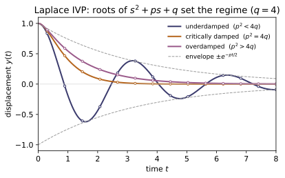
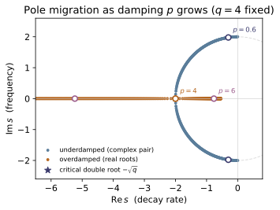
Example problems
From F(s)=∫₀^∞ f e^{−st}dt derive L{1}=1/s, L{t}=1/s², L{e^{at}}=1/(s−a), and L{cos ωt}=s/(s²+ω²). Check: laplace_numeric(lambda t: math.cos(2*t), 3.0).real vs F_cos(2, 3).
Each entry is the integral $F(s)=\int_0^\infty f(t)e^{-st}dt$ (Re $s$ large enough):
For the cosine, write $\cos\omega t=\Re\,e^{i\omega t}$ and use the exponential entry with $a=i\omega$: $\mathcal L\{e^{i\omega t}\}=\frac1{s-i\omega}=\frac{s+i\omega}{s^2+\omega^2}$, whose real part is $\frac{s}{s^2+\omega^2}$. At $\omega=2,\,s=3$ this is $3/13\approx0.230769$, exactly what laplace_numeric(cos 2t,3) and F_cos(2,3) return.
Show L{f′}=sF(s)−f(0). Apply it to f=sin ωt to get L{ω cos ωt}=ωs/(s²+ω²), and check it is consistent with the cos-table entry. Check: laplace_numeric(lambda t: wmath.cos(wt), s).real ≈ s*F_sin(w, s).
Integrate by parts, using $f(t)e^{-st}\to0$ as $t\to\infty$:
Take $f=\sin\omega t$, so $f(0)=0$ and $f'=\omega\cos\omega t$. Then $\mathcal L\{\omega\cos\omega t\}=s\,\mathcal L\{\sin\omega t\}-0=s\cdot\frac{\omega}{s^2+\omega^2}=\frac{\omega s}{s^2+\omega^2}$, which is $\omega$ times the cosine table entry $\frac{s}{s^2+\omega^2}$ — consistent. Numerically laplace_numeric(wcos wt, s).real equals sF_sin(w, s).
Compute e^{−t}∗e^{−2t} by the integral ∫₀ᵗ e^{−τ}e^{−2(t−τ)}dτ and show it equals e^{−t}−e^{−2t}. Confirm its transform is 1/[(s+1)(s+2)]. Check: convolve(lambda t: math.exp(-t), lambda t: math.exp(-2*t), 1.3).
Factor the integrand and integrate:
Its transform is $\mathcal L\{e^{-t}\}-\mathcal L\{e^{-2t}\}=\frac1{s+1}-\frac1{s+2}=\frac1{(s+1)(s+2)}$, which is exactly the product $F(s)G(s)$ of the two transforms — the convolution theorem $\mathcal L\{f*g\}=F\,G$. At $t=1.3$, $e^{-1.3}-e^{-2.6}=0.198258$, matching convolve(...).
Solve y″+4y=0, y(0)=1, y′(0)=0. Transform to (s²+4)Y=s, so Y=s/(s²+4) and y=cos 2t. Then redo with damping y″+0.5y′+4y=0 and identify the underdamped form e^{αt}(C cos βt+D sin βt). Check: solve_ivp_laplace(0.5, 4, 1, 0) vs rk4(0.5, 4, 1, 0, 0, t).
Using $\mathcal L\{y''\}=s^2Y-sy(0)-y'(0)$, the undamped problem gives $(s^2+4)Y=s\Rightarrow Y=\frac{s}{s^2+4}\Rightarrow y=\cos 2t$. With damping, $(s^2+0.5s+4)Y=(s+0.5)y(0)+y'(0)=s+0.5$, so $Y=\dfrac{s+0.5}{s^2+0.5s+4}$. The denominator's roots are $\alpha\pm i\beta$ with $\alpha=-\tfrac{0.5}{2}=-0.25$ and $\beta=\tfrac12\sqrt{4\cdot4-0.5^2}=1.9843$, giving the underdamped response
solve_ivp_laplace(0.5, 4, 1, 0) reproduces this and agrees with rk4(...) to ~1e-4.
Solve y″+0.5y′+4y=3, y(0)=y′(0)=0. Show Y=3/[s(s²+0.5s+4)], that the s=0 pole gives the steady state y_p=3/4, and the quadratic poles give the decaying transient. Check: solve_ivp_laplace(0.5, 4, 0, 0, F0=3); y(20) ≈ 0.75.
With zero initial data and forcing $\mathcal L\{3\}=3/s$, $(s^2+0.5s+4)Y=3/s\Rightarrow Y=\dfrac{3}{s\,(s^2+0.5s+4)}$. Partial fractions split this into the $s=0$ pole and the quadratic poles:
The $A/s$ term inverts to the constant steady state $y_p=3/4$; the quadratic poles $\alpha\pm i\beta$ ($\alpha=-0.25<0$) invert to a decaying transient $e^{-0.25t}(\dots)$ that dies out. Hence $y(t)\to 3/4$, and solve_ivp_laplace(0.5, 4, 0, 0, F0=3) gives $y(20)=0.7515\approx0.75$.
Invert 1/(s+1)². From the table t e^{at} ↔ 1/(s−a)², so L⁻¹=t e^{−t} — the hallmark t·e^{rt} of a repeated root. Check: invert_quadratic(0, 1, 2, 1) (i.e. (0·s+1)/(s²+2s+1)) → t e^{−t}.
Here $s^2+2s+1=(s+1)^2$ has the repeated root $r=-1$ (discriminant $2^2-4=0$). The table pair $\mathcal L\{t\,e^{at}\}=\dfrac{1}{(s-a)^2}$ with $a=-1$ inverts $\dfrac{1}{(s+1)^2}$ to
The factor of $t$ — absent for distinct roots — is the signature of critical damping. With $b_1=0,b_0=1,p=2,q=1$ the code's repeated-root branch returns $(b_1+(b_1r+b_0)t)e^{rt}=t\,e^{-t}$, so invert_quadratic(0, 1, 2, 1) evaluated at $t=2$ gives $2e^{-2}=0.270671$.
Run the worked code: cd MA/MA-10_laplace_transforms/code && python3 laplace.py
MA-11 — Sturm–Liouville Theory
Mathematics trunk · MA/MA-11_sturm_liouville · open in the Teaching Network
The self-adjoint eigenvalue problem −(p y′)′ + q y = λ w y on [a,b] with homogeneous boundary conditions: its real, ordered eigenvalues, its w-orthogonal eigenfunctions, their completeness (any function expands in them — the abstraction of Fourier series), and the Rayleigh quotient variational bound λ_min ≤ R[y]. The operator is finite-differenced to a symmetric tridiagonal matrix; eigenvalues come from a Sturm sequence — the object the theory is named after — and bisection.
Key equations
Figures
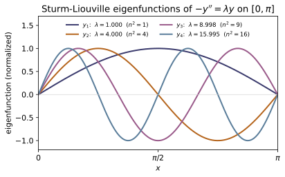
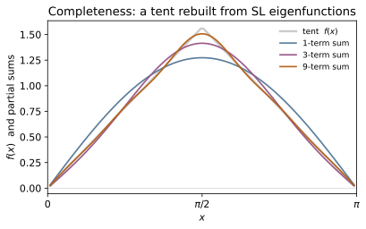
Example problems
Write Legendre's equation (1−x²)y″−2xy′+l(l+1)y=0 as −((1−x²)y′)′ = l(l+1)y, i.e. p=1−x², q=0, w=1, λ=l(l+1). Do the same for Bessel's equation to read off its p, q, w. (This is why Legendre/Bessel functions are automatically orthogonal.)
Expand the SL derivative with the product rule: $\frac{d}{dx}\big[(1-x^2)y'\big]=(1-x^2)y''+\frac{d}{dx}(1-x^2)\,y'=(1-x^2)y''-2x\,y'$, which is exactly the first two terms of Legendre's equation. Hence
For Bessel's equation $x^2y''+xy'+(k^2x^2-\nu^2)y=0$, divide by $x$ and use $xy''+y'=(xy')'$:
so $p=x,\ q=\nu^2/x,\ w=x,\ \lambda=k^2$. Both have $p>0$ and a positive weight, so by §2 their eigenfunctions ($P_l$ with $w=1$, $J_\nu$ with $w=x$) are automatically $w$-orthogonal.
For −y″=λy on [0,π], y(0)=y(π)=0, derive λₙ=n² and yₙ=sin nx by hand. Confirm numerically. Check: sl_eigenpairs(1, 0, 1, 0, math.pi, 200, 5) → λ ≈ 1,4,9,16,25.
With $p=w=1,\ q=0$ the equation is $y''+\lambda y=0$. For $\lambda>0$ the general solution is $y=A\cos\sqrt\lambda\,x+B\sin\sqrt\lambda\,x$. The condition $y(0)=0$ kills the cosine ($A=0$); then $y(\pi)=B\sin\sqrt\lambda\,\pi=0$ forces
($\lambda\le0$ gives only $y\equiv0$.) The finite-difference solver returns $\lambda\approx0.99998,\,3.9997,\,8.998,\,15.995,\,24.987$ — i.e. $1,4,9,16,25$ with a small downward grid bias, so sl_eigenpairs(1, 0, 1, 0, math.pi, 200, 5) $\approx n^2$.
Show directly that ∫₀^π sin(mx)sin(nx)dx = (π/2)δₘₙ. Then confirm the computed eigenfunctions are orthogonal under inner_w. Check: inner_w(ys[m], ys[n], w, h) ≈ 0 for m≠n.
Use the product-to-sum identity $\sin(mx)\sin(nx)=\tfrac12\big[\cos((m-n)x)-\cos((m+n)x)\big]$. For integers $m\ne n$,
since $\sin(k\pi)=0$. For $m=n$, $\int_0^\pi\sin^2(nx)\,dx=\int_0^\pi\tfrac12(1-\cos 2nx)\,dx=\pi/2$. Hence $\int_0^\pi\sin(mx)\sin(nx)\,dx=\tfrac{\pi}{2}\delta_{mn}$. Numerically inner_w(ys[0], ys[1], w, h) $\approx1.1\times10^{-16}\approx0$, while the diagonal inner_w(ys[0], ys[0], w, h) $=0.0156\ne0$ (nonzero because the code normalizes each eigenvector to unit length, not to $\sin$).
Expand f(x)=x(π−x) in the eigenfunctions. Verify it reconstructs f and that ⟨f,f⟩_w = Σ cₙ²⟨yₙ,yₙ⟩_w (Parseval). Check: expand(f, ys, w, h), reconstruct(c, ys); compare the two energies.
Write $f=\sum_n c_n y_n$ with $c_n=\langle f,y_n\rangle_w/\langle y_n,y_n\rangle_w$ (theorem 3); reconstruct(c, ys) returns $f$ to grid accuracy. Taking the weighted inner product of $f$ with itself and using $w$-orthogonality collapses the double sum to its diagonal:
Analytically $\langle f,f\rangle_w=\int_0^\pi x^2(\pi-x)^2\,dx=\pi^5/30\approx10.2007$. The code gives both sides $=10.200653$ (only odd $n$ contribute, since $f$ is symmetric about $x=\pi/2$), confirming completeness.
Use the trial function y=x(π−x) (which satisfies the boundary conditions) to show R[y]=10/π²≈1.0132 is an upper bound on λ_min=1. Try a worse guess and watch the bound loosen. Check: rayleigh_quotient(1, 0, 1, [x*(pi-x) for x in xs], 0, pi).
With $p=1,q=0,w=1$ and $y=x(\pi-x)$ (so $y'=\pi-2x$ and $y(0)=y(\pi)=0$),
Hence $R[y]=\dfrac{\pi^3/3}{\pi^5/30}=\dfrac{10}{\pi^2}\approx1.0132\ge\lambda_{\min}=1$ — a one-line guess overshooting the true ground eigenvalue by only $1.3\%$. The code returns rayleigh_quotient(...) $=1.013187$ (vs $10/\pi^2=1.013212$, the gap pure discretization); a trial shaped less like $\sin x$ raises the numerator and loosens the bound.
For the 5×5 matrix with diagonal 2 and off-diagonal −1, evaluate sturm_count at a few μ and confirm it is nondecreasing and jumps by one at each eigenvalue 2−2cos(kπ/6). This is Sturm's theorem doing the eigenvalue bookkeeping. Check: sturm_count([2]5, [-1]4, mu) for μ = 0, 1, 2, 3, 4.
The $5\times5$ matrix $T=\mathrm{tridiag}(-1,2,-1)$ is the discrete Laplacian, with known eigenvalues $\lambda_k=2-2\cos(k\pi/6)=\{0.268,\,1,\,2,\,3,\,3.732\}$ for $k=1,\dots,5$. sturm_count returns the number of eigenvalues strictly below $\mu$, so sampling $\mu=0,1,2,3,4$ gives
which is nondecreasing. The count rises by exactly one as $\mu$ crosses each $\lambda_k$; the apparent jump of $2$ between $\mu=3$ and $\mu=4$ merely means two eigenvalues ($3$ and $3.732$) lie in $(3,4)$. This sign-change count is Sturm's theorem, and bisecting on it is how tridiag_eigenvalues isolates each $\lambda_k$.
Run the worked code: cd MA/MA-11_sturm_liouville/code && python3 sturm_liouville.py
MA-12 — Special Functions
Mathematics trunk · MA/MA-12_special_functions · open in the Teaching Network
The four families that solve the separated equations of physics: Legendre P_n (and associated P_l^m → spherical harmonics), Hermite H_n, Laguerre L_n, and Bessel J_n. For each: a stable recurrence to evaluate it, the weight that makes it orthogonal, the ODE it satisfies, and (Legendre) its generating function. Every evaluator is checked three independent ways — closed-form low orders, the orthogonality integral, and the residual of its own ODE.
Key equations
Figures
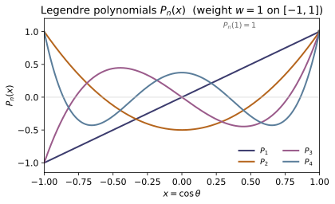
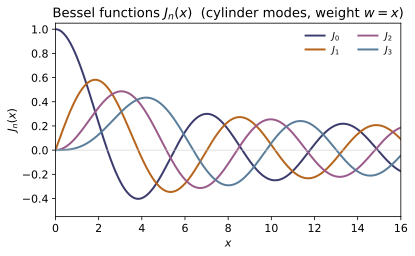
Example problems
From (n+1)P_{n+1}=(2n+1)xP_n−nP_{n−1} build P₂,P₃,P₄. Verify P₂=(3x²−1)/2 also follows from Rodrigues' formula P₂=(1/8)d²/dx²(x²−1)². Confirm P_n(1)=1. Check: legendre(2, x), legendre(4, 1.0).
Start from $P_0=1,\ P_1=x$ and the recurrence $(n{+}1)P_{n+1}=(2n{+}1)xP_n-nP_{n-1}$:
Rodrigues reproduces $P_2$: $(x^2-1)^2=x^4-2x^2+1$, so $\frac{d^2}{dx^2}(x^2-1)^2=12x^2-4$ and $\frac1{8}(12x^2-4)=\frac{3x^2-1}{2}$. At $x=1$ the generating function $1/\sqrt{1-2t+t^2}=1/(1-t)=\sum_n t^n$ forces $P_n(1)=1$; indeed legendre(4, 1.0) $=1$.
Show 1/√(1−2xt+t²)=ΣP_n(x)tⁿ and that expanding 1/|r−r′| in t=r'/r reproduces it with x=cosθ — the monopole/dipole/quadrupole series of ~EM-05. Check: legendre_generating(0.3, 0.5) → series equals the closed form.
Let $g(x,t)=(1-2xt+t^2)^{-1/2}$. With $x=\cos\theta$ the law of cosines makes $\sqrt{1-2xt+t^2}=|\mathbf r-\mathbf r'|/r$ when $t=r'/r$, so
the monopole ($n{=}0$), dipole ($n{=}1$), quadrupole ($n{=}2$)… series of ~EM-05. Expanding $g$ in powers of $t$ and collecting terms returns $P_0=1,\,P_1=x,\,P_2=\tfrac{3x^2-1}2,\dots$ Numerically at $x=0.3,\,t=0.5$ both sides equal $1.02597835$, so legendre_generating(0.3, 0.5) reports matching series and closed form.
Verify ∫_{−1}^1 P_m P_n dx = 2/(2n+1)δ_mn, ∫H_mH_n e^{−x²}dx=2ⁿn!√π δ_mn, and ∫₀^∞ L_mL_n e^{−x}dx=δ_mn. Each weight is the one that makes the operator self-adjoint (~MA-11). Check: orthogonality_legendre, _hermite, _laguerre.
Each family is the eigenfunction set of a Sturm–Liouville operator made self-adjoint by its weight $w$ ($1$, $e^{-x^2}$, $e^{-x}$), so eigenfunctions of different eigenvalue are $w$-orthogonal (~MA-11). The diagonal norms come from the generating functions; e.g. for Legendre $\int_{-1}^1 g^2\,dx=\sum_n t^{2n}\!\int_{-1}^1\! P_n^2\,dx$, while the left side integrates directly to $\frac1t\ln\frac{1+t}{1-t}=2\sum_n\frac{t^{2n}}{2n+1}$, giving
The demo confirms the diagonals $2,\tfrac23,0.4,\tfrac27$ for Legendre, $2^n n!\sqrt\pi$ for Hermite, and $1$ for Laguerre, with off-diagonals $\sim10^{-17}$ — exactly what orthogonality_legendre/_hermite/_laguerre return.
Plug P_n, H_n, L_n, J_n into their defining ODEs and confirm the residual is ~0. Check: ode_residual('legendre', 3, 0.4), ode_residual('bessel', 2, 3.0), etc.
Each function is built to satisfy its defining ODE, so substituting it and forming the left-hand side must give zero:
ode_residual forms these with $y',y''$ from central differences, so the output is the finite-difference truncation error rather than an exact zero: ode_residual('legendre', 3, 0.4) $\approx-2.3\times10^{-8}$ and ode_residual('bessel', 2, 3.0) $\approx-1.9\times10^{-6}$ — both $\sim0$, confirming each function solves its equation.
Compute J₀(1), J₁(2.5) from the integral J_n(x)=(1/π)∫₀^π cos(nτ−x sinτ)dτ and from the power series; confirm they agree and that J₀(0)=1, J₁(0)=0. Check: bessel_j(0, 1.0) ≈ 0.7651976.
The power series is $J_n(x)=\sum_{k=0}^\infty\frac{(-1)^k}{k!\,(n{+}k)!}\big(\tfrac{x}{2}\big)^{2k+n}$. For $J_0(1)$ set $n=0,\,x=1$:
identical to the integral $\frac1\pi\int_0^\pi\cos(\sin\tau)\,d\tau$. The leading power is $(x/2)^n$, so $J_0(0)=1$ (its $k{=}0$ term) while $J_1(0)=0$ (every term carries a factor of $x$). This matches bessel_j(0, 1.0) $\approx0.7651976$.
Build P_l^m for l=1,2 and verify P_1^1=−√(1−x²), P_2^2=3(1−x²), and that P_l^0=P_l. These times e^{imφ} are the Y_l^m of ~QM-10. Check: assoc_legendre(2, 2, x), assoc_legendre(2, 0, x) == legendre(2, x).
The associated functions start from $P_m^m=(-1)^m(2m{-}1)!!\,(1-x^2)^{m/2}$. For $m=1$, $(2m{-}1)!!=1!!=1$:
For $m=2$, $(2m{-}1)!!=3!!=3$, so $P_2^2=(-1)^2\cdot3\cdot(1-x^2)=3(1-x^2)$. When $m=0$ the prefactor is $1$ and the $l$-recurrence is the ordinary Legendre one, so $P_l^0=P_l$. At $x=0.4$, assoc_legendre(2, 2, x) $=2.52=3(1-0.16)$ and assoc_legendre(2, 0, x) $=-0.26=$ legendre(2, x); multiplied by $e^{im\phi}$ these are the $Y_l^m$ of ~QM-10.
Run the worked code: cd MA/MA-12_special_functions/code && python3 special_functions.py
MA-13 — Calculus of Variations
Mathematics trunk · MA/MA-13_calculus_of_variations · open in the Teaching Network
Extremizing a functional J[y]=∫L(x,y,y′)dx: the Euler–Lagrange equation ∂L/∂y − d/dx(∂L/∂y′)=0, the Beltrami first integral (when L has no explicit x, L − y′L_{y′} is conserved), and the classic problems — shortest path (geodesic), brachistochrone (cycloid), and minimal surface of revolution (catenary). The functional is discretized segment-by-segment with L's partials by finite differences, so any L works; a coordinate-Newton minimizer recovers extremals numerically.
Key equations
Figures
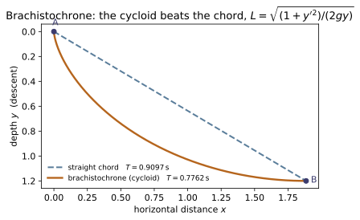
functional of $L=\sqrt{(1+y'^2)/2gy}$, show the cycloid is faster despite the longer path — it trades length for early steepness.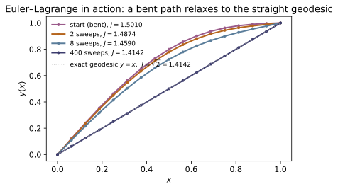
functional) falls monotonically to $\sqrt{2}\approx1.4142$, the geodesic minimum.Example problems
Vary y→y+εη with η(x₁)=η(x₂)=0, set dJ/dε|₀=0, integrate the η′ term by parts, and read off ∂L/∂y − d/dx(∂L/∂y′)=0. Check: euler_lagrange_residual is ~0 along an extremal.
Put $y\to y+\varepsilon\eta$ with $\eta(x_1)=\eta(x_2)=0$ and expand $J(\varepsilon)=\int_{x_1}^{x_2}L(x,y+\varepsilon\eta,y'+\varepsilon\eta')\,dx$. Stationarity is
Integrate the second term by parts: $\int L_{y'}\eta'\,dx=\big[L_{y'}\eta\big]_{x_1}^{x_2}-\int\frac{d}{dx}L_{y'}\,\eta\,dx$, and the boundary term vanishes since $\eta$ dies at the ends. Hence $\int\!\big(L_y-\frac{d}{dx}L_{y'}\big)\eta\,dx=0$ for every $\eta$, and the fundamental lemma gives $\frac{\partial L}{\partial y}-\frac{d}{dx}\frac{\partial L}{\partial y'}=0$. euler_lagrange_residual evaluates this left side and returns $\sim10^{-7}$ along the recovered extremal.
For L=√(1+y′²) show ∂L/∂y=0 forces ∂L/∂y′=const ⇒ y′=const ⇒ a line. Confirm the minimizer recovers y=x with J=√2. Check: minimize_path(lambda x,y,p: (1+p*p)**0.5, 0,0,1,1); functional(...) → √2.
For $L=\sqrt{1+y'^2}$ we have $\partial L/\partial y=0$, so Euler–Lagrange collapses to $\frac{d}{dx}\frac{\partial L}{\partial y'}=0$, i.e.
a straight line. Through $(0,0)$ and $(1,1)$ that line is $y=x$, with $J=\int_0^1\sqrt{1+1}\,dx=\sqrt2\approx1.414214$. minimize_path starts from a path bent by $0.3$ and relaxes it back to $y=x$ ($\max|y-x|\approx5.6\times10^{-8}$), and functional returns $1.414214=\sqrt2$.
When L has no explicit x, show d/dx(L − y′L_{y′}) = 0 using the Euler–Lagrange equation. Hence L − y′L_{y′}=const. Check: beltrami(L, x, y, p) along an extremal is constant.
Differentiate $B=L-y'L_{y'}$ along the path:
On an extremal the bracket is zero by Euler–Lagrange, leaving $dB/dx=L_x$. So when $L$ carries no explicit $x$ ($L_x=0$),
the first integral — the variational ancestor of energy conservation (~CM-19). beltrami(L, x, y, p) returns this $B$, which stays constant along each analytic extremal.
Minimize T=∫√((1+y′²)/(2gy))dx. Apply Beltrami to get y(1+y′²)=const, and show its solution is the cycloid x=a(θ−sinθ), y=a(1−cosθ). Verify the Beltrami constant equals 1/√(2a). Check: cycloid_brachistochrone(1.0, thetas) with the exact slope sin t/(1−cos t).
$T\propto\int\sqrt{(1+y'^2)/y}\,dx$ has no explicit $x$, so Beltrami applies. With $L=\sqrt{(1+y'^2)/y}$, $L_{y'}=y'/\sqrt{y(1+y'^2)}$, giving
The cycloid $x=a(\theta-\sin\theta),\ y=a(1-\cos\theta)$ has $y'=\frac{\sin\theta}{1-\cos\theta}$, so $1+y'^2=\frac{2}{1-\cos\theta}$ and $y(1+y'^2)=a(1-\cos\theta)\cdot\frac{2}{1-\cos\theta}=2a$ ✓. The Beltrami constant is $1/\sqrt{2a}$; at $a=1$, cycloid_brachistochrone(1.0, thetas) gives $B=0.70711=1/\sqrt2$.
Minimize ∫y√(1+y′²)dx. Beltrami gives y/√(1+y′²)=c, whose solution is y=c cosh(x/c). Confirm B=c along it. Check: catenary(1.3, xs); beltrami(lambda x,y,p: y(1+pp)**0.5, x, y, sinh(x/c)) ≈ 1.3.
$L=y\sqrt{1+y'^2}$ has no explicit $x$. With $L_{y'}=yy'/\sqrt{1+y'^2}$,
Squaring gives $y'=\sqrt{y^2-c^2}/c$; separating, $\int\frac{dy}{\sqrt{y^2-c^2}}=\int\frac{dx}{c}$ yields $\cosh^{-1}(y/c)=x/c$, i.e. $y=c\cosh(x/c)$. On it $y'=\sinh(x/c)$ and $1+y'^2=\cosh^2(x/c)$, so $B=y/\sqrt{1+y'^2}=c$. With $c=1.3$, catenary(1.3, xs) and beltrami(...) return $B\equiv1.3$.
For L=L(x,y₁,y₂,y₁′,y₂′) derive one Euler–Lagrange equation per yᵢ. Identify x→t and L=T−V to obtain Newton's equations — the bridge to ~CM-17. (Pen-and-paper; no code check.)
With $L=L(x,y_1,y_2,y_1',y_2')$ vary each $y_i\to y_i+\varepsilon\eta_i$ independently ($\eta_i$ vanishing at the ends). Integrating each $\eta_i'$ term by parts as in P1,
Because the $\eta_i$ are arbitrary and independent, every coefficient must vanish: $\frac{\partial L}{\partial y_i}-\frac{d}{dx}\frac{\partial L}{\partial y_i'}=0$, one equation per $y_i$. Setting $x\to t$ and $L=T-V$ with $T=\tfrac12\sum_i m_i\dot y_i^2$ gives $L_{\dot y_i}=m_i\dot y_i$ and $L_{y_i}=-\partial V/\partial y_i$, so $m_i\ddot y_i=-\partial V/\partial y_i=F_i$ — Newton's equations, the bridge to ~CM-17.
Run the worked code: cd MA/MA-13_calculus_of_variations/code && python3 variational.py
MA-14 — Green's Functions
Mathematics trunk · MA/MA-14_greens_functions · open in the Teaching Network
The Green's function is the inverse of a differential operator: G solves L_x G(x,ξ)=δ(x−ξ), and then the solution of L u = f is just u(x)=∫G(x,ξ)f(ξ)dξ — superpose the response to a unit point source. Three views: the closed-form two-solution construction for a boundary-value problem, the eigenfunction (spectral) expansion G=Σφ_n(x)φ_n(ξ)/λ_n, and the causal propagator for an initial-value problem. Each is cross-checked against a direct finite-difference solve or RK4.
Key equations
Figures
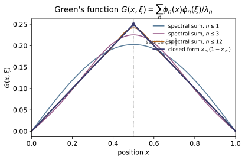
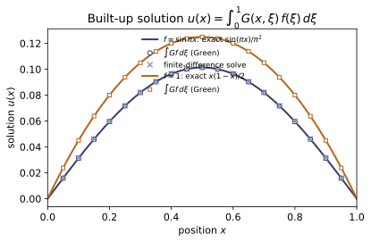
Example problems
For −u″=f on [0,1], u(0)=u(1)=0, take y₁=x and y₂=1−x. Splice them at x=ξ with continuity and a unit jump in slope to get G=x_<(1−x_>). Verify G(0,ξ)=G(1,ξ)=0 and that ∂G/∂x jumps by −1 at x=ξ. Check: green_dirichlet; the kink test.
Write $G=A\,y_1(x)=Ax$ on $x<\xi$ (so $G(0,\xi)=0$) and $G=B\,y_2(x)=B(1-x)$ on $x>\xi$ (so $G(1,\xi)=0$). Continuity at $x=\xi$ gives $A\xi=B(1-\xi)$, and integrating $-G''=\delta$ across $\xi$ fixes the slope jump $G_x(\xi^+)-G_x(\xi^-)=-1$, i.e. $-B-A=-1$. Solving, $A=1-\xi,\ B=\xi$, so
Then $G(0,\xi)=G(1,\xi)=0$, and the slope drops from $1-\xi$ to $-\xi$ at $x=\xi$ — a jump of $-1$ — matching green_dirichlet and the kink test.
Use u(x)=∫₀¹ G(x,ξ)f(ξ)dξ with f=sin πx to get u=sin(πx)/π², and with f=1 to get u=x(1−x)/2. Check: solve_bvp_greens(lambda x: math.sin(math.pi*x), xs).
Since $L_xG=\delta$, the integral $u(x)=\int_0^1G(x,\xi)f(\xi)\,d\xi$ obeys $-u''=f$ with $u(0)=u(1)=0$. For $f=\sin\pi x$, try $u=\sin(\pi x)/\pi^2$: then $-u''=\pi^2\sin(\pi x)/\pi^2=\sin\pi x$ ✓ and $u(0)=u(1)=0$ ✓. For $f=1$, $u=x(1-x)/2$ gives $-u''=1$ with the same boundary values. Numerically at $x=\tfrac14$, $\sin(\pi/4)/\pi^2=0.071645$ — exactly the value solve_bvp_greens(lambda x: math.sin(math.pi*x), xs) returns.
Argue that a self-adjoint L gives a symmetric Green's function G(x,ξ)=G(ξ,x), and confirm it numerically (including the Helmholtz case). Check: green_dirichlet(0.2,0.7) == green_dirichlet(0.7,0.2).
Green's second identity for a self-adjoint $L$ reads $\int(v\,Lu-u\,Lv)\,dx=$ boundary terms, which vanish under homogeneous BCs. Put $u=G(x,\xi_1),\ v=G(x,\xi_2)$, so $Lu=\delta(x-\xi_1)$ and $Lv=\delta(x-\xi_2)$:
Hence $G$ is symmetric. Concretely $G(0.2,0.7)=0.2\,(1-0.7)=0.06=G(0.7,0.2)$, so green_dirichlet(0.2,0.7) == green_dirichlet(0.7,0.2) (the same holds for the Helmholtz $G$).
Show G=Σ φₙ(x)φₙ(ξ)/λₙ with φₙ=√2 sin(nπx), λₙ=(nπ)². Sum the series and watch it converge to the closed-form tent. Which n dominate? (The small-λ, low-n modes.) Check: green_series(0.3, 0.7, 2000) ≈ green_dirichlet(0.3, 0.7) = 0.09.
Expand $G(x,\xi)=\sum_n c_n(\xi)\varphi_n(x)$ in the eigenbasis $L\varphi_n=\lambda_n\varphi_n$. Using completeness $\delta(x-\xi)=\sum_n\varphi_n(x)\varphi_n(\xi)$ and $LG=\delta$,
With $\varphi_n=\sqrt2\sin(n\pi x)$ and $\lambda_n=(n\pi)^2$, the $1/\lambda_n=1/(n\pi)^2$ weight makes the small-$\lambda$, low-$n$ modes dominate. At $(0.3,0.7)$ the series → $0.090000$, matching green_series(0.3, 0.7, 2000) ≈ green_dirichlet(0.3, 0.7) $=0.3(1-0.7)=0.09$.
Build G for −u″+k²u with y₁=sinh kx, y₂=sinh k(1−x) and Wronskian giving the denominator k sinh k. Solve a BVP with it and match a direct finite-difference solve. Check: solve_bvp_greens(f, xd, k=3) vs solve_bvp_direct(f, 49, k=3).
Take $G=A\sinh(kx)$ on $x<\xi$ and $G=B\sinh\!\big(k(1-x)\big)$ on $x>\xi$; each piece kills one boundary condition. Continuity gives $A\sinh k\xi=B\sinh k(1-\xi)$, and integrating $-G''+k^2G=\delta$ across $\xi$ gives the unit jump $G_x(\xi^+)-G_x(\xi^-)=-1$. Using $\sinh(k\xi)\cosh k(1-\xi)+\cosh(k\xi)\sinh k(1-\xi)=\sinh k$, one solves
the Wronskian of $\sinh kx,\ \sinh k(1-x)$ supplying the $k\sinh k$. With $k=3$ the Green integral matches the finite-difference solve to $\sim10^{-4}$, i.e. solve_bvp_greens(f, xd, k=3) ≈ solve_bvp_direct(f, 49, k=3).
For y″+ω²y=f, y(0)=y′(0)=0, show G(t,τ)=sin ω(t−τ)/ω for t≥τ (the inverse Laplace transform of 1/(s²+ω²)). Solve a unit step f=1 to get y=(1−cos ωt)/ω² and check it against RK4. Check: solve_oscillator_greens(lambda t: 1.0, t, 2.0) vs rk4_oscillator(...).
For $t<\tau$ causality forces $y=0$. Integrating $y''+\omega^2y=\delta(t-\tau)$ across $\tau$ imparts a unit velocity jump: $y(\tau^+)=0,\ y'(\tau^+)=1$. For $t>\tau$ the homogeneous solution $y=C\cos\omega(t-\tau)+D\sin\omega(t-\tau)$ with these data has $C=0,\ D=1/\omega$, so $G(t,\tau)=\dfrac{\sin\omega(t-\tau)}{\omega}\,H(t-\tau)$ — the inverse Laplace transform of $1/(s^2+\omega^2)$. For a unit step $f=1$,
At $\omega=2,\ t=1$ this is $(1-\cos2)/4=0.354037$, matching solve_oscillator_greens(lambda t: 1.0, t, 2.0) and rk4_oscillator(...).
Run the worked code: cd MA/MA-14_greens_functions/code && python3 greens_function.py
MA-15 — The Dirac Delta & Distributions
Mathematics trunk · MA/MA-15_dirac_delta · open in the Teaching Network
The Dirac delta as the limit of nascent sequences (Gaussian, Lorentzian, box, sinc) and as a linear functional — the sifting map φ ↦ φ(0). The defining sifting property, the composition rule δ(g(x))=Σ δ(x−x_i)/|g′(x_i)|, the derivative δ′ (⟨δ′,φ⟩=−φ′(0)), the Heaviside relation H′=δ, and the Fourier representation δ(x)=(1/2π)∫e^{ikx}dk. Every identity is realized as the small-width limit of an explicit sequence and checked by quadrature.
Key equations
Figures
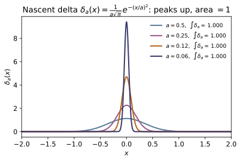
simpson, is shown). In the limit $a\to0$ it becomes the Dirac $\delta$ — a distribution, not a function.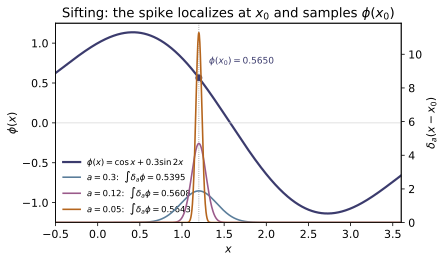
sift converges to $\phi(x_0)=0.5650$ (dot): the delta is the linear functional that evaluates a test function at a point.Example problems
Show each of (1/(a√π))e^{−(x/a)²}, (a/π)/(x²+a²), and the box (1/a)·1_{|x|<a/2} integrates to 1, and that ∫δ_a(x−x₀)φ(x)dx→φ(x₀) as a→0. Which converges fastest, and why does the Lorentzian lag? (Heavy tails — no finite second moment.) Check: sift(phi, 1.2, "gaussian", a) for shrinking a.
Each integrates to $1$: with $u=x/a$, $\int\frac{1}{a\sqrt\pi}e^{-(x/a)^2}dx=\frac1{\sqrt\pi}\int e^{-u^2}du=1$; $\int\frac{a/\pi}{x^2+a^2}dx=\frac1\pi\big[\arctan(x/a)\big]_{-\infty}^{\infty}=1$; and $\int\frac1a\mathbf 1_{|x|<a/2}\,dx=\frac1a\cdot a=1$. As $a\to0$ each spike concentrates at $x_0$, so $\int\delta_a(x-x_0)\phi(x)\,dx\to\phi(x_0)$. The Gaussian converges fastest (its $e^{-u^2}$ tail is negligible), while the Lorentzian lags — its $1/x^2$ tail has no finite second moment, so distant regions still contribute. For $\phi(1.2)=0.564997$, at $a=0.01$ the gaussian gives $0.564967$ and the box $0.564992$, but the lorentzian only $0.557379$.
By parts, ⟨δ′,φ⟩=−⟨δ,φ′⟩=−φ′(0). Verify with φ=e^{−x} (answer +1) and φ=sin 2x (answer −2). Check: delta_prime_sift(lambda x: math.exp(-x), 0.03) ≈ 1.
Integrate by parts, the boundary term vanishing because $\delta$ has compact support:
For $\phi=e^{-x}$, $\phi'(0)=-1$, so the answer is $-\phi'(0)=+1$; for $\phi=\sin2x$, $\phi'(0)=2\cos0=2$, so $-\phi'(0)=-2$. Numerically delta_prime_sift(lambda x: math.exp(-x), 0.03) $=1.0002\approx1$, and the $\sin2x$ case gives $-1.998\approx-2$.
Prove δ(ax)=δ(x)/|a| by substitution (Boas (11.19c)), then the general rule δ(f(x))=Σ δ(x−x_i)/|f′(x_i)| (Boas (11.19e)). Apply to δ(x²−c²) to get [δ(x−c)+δ(x+c)]/(2c). Check: delta_compose_rhs, delta_compose_integral agree as a→0.
Substitute $u=ax$: $\int\delta(ax)\phi(x)\,dx=\frac1{|a|}\int\delta(u)\phi(u/a)\,du =\frac1{|a|}\phi(0)$ (the $|a|$ comes from flipping limits when $a<0$), so $\delta(ax)=\delta(x)/|a|$. Near each simple root $x_i$, $f(x)\approx f'(x_i)(x-x_i)$, hence
For $f=x^2-c^2=(x-c)(x+c)$ the roots are $\pm c$ with $|f'|=2c$, giving $[\delta(x-c)+\delta(x+c)]/(2c)$, i.e. $[\phi(c)+\phi(-c)]/(2c)$. With $c=1.5$ the closed form is $0.047158$, matched by the nascent integral → $0.047159$ as $a\to0$ — so delta_compose_rhs, delta_compose_integral agree.
Show H′(x)=δ(x) via ⟨H′,φ⟩=−∫₀^∞φ′=φ(0). This is why a point charge has density ρ=qδ(r−r₀) (Boas (11.20)–(11.21), p.456) — ~EM-01. Check: the integration-by-parts identity −∫₀^L φ′dx ≈ φ(0) for decaying φ.
With $H(x)=0$ for $x<0$ and $1$ for $x>0$, and a decaying test function $\phi$,
Hence $H'(x)=\delta(x)$: the delta is the density of a unit jump, which is exactly why a point charge carries density $\rho=q\,\delta(\mathbf r-\mathbf r_0)$ (~EM-01). Numerically $-\int_0^L\phi'\,dx=\phi(0)-\phi(L)\approx\phi(0)$ for decaying $\phi$.
Show (1/2π)∫_{−K}^{K}e^{ikx}dk = sin(Kx)/(πx), and that it → δ(x) as K→∞. Confirm it sifts a decaying φ (it is not integrable against a growing one). Check: fourier_delta_kernel(x, K) integrated against e^{−x²}cos x → φ(0).
Integrate the exponential directly:
This Dirichlet kernel has $\int=1$ and oscillates ever faster as $K\to\infty$, so it behaves as a nascent $\delta$, sifting any decaying $\phi$: $\int\frac{\sin Kx}{\pi x}\phi(x)\,dx\to\phi(0)$. Against $\phi=e^{-x^2}\cos x$ (so $\phi(0)=1$), fourier_delta_kernel(x, K) integrated already gives $1.000000$ by $K=20$.
Boas's first delta example is y″+ω²y=δ(t−t₀), y(0)=y′(0)=0 — solve it to get the response sin ω(t−t₀)/ω for t>t₀. This is exactly the causal Green's function of ~MA-14. (Pen-and-paper; compare with MA-14's causal_green_oscillator.)
For $t<t_0$ causality forces $y=0$. Integrating $y''+\omega^2y=\delta(t-t_0)$ across $t_0$ imparts a unit velocity jump: $y(t_0^+)=0,\ y'(t_0^+)=1$. For $t>t_0$ the homogeneous solution $y=C\cos\omega(t-t_0)+D\sin\omega(t-t_0)$ with these data has $C=0,\ D=1/\omega$, so
This impulse response is precisely the retarded Green's function of ~MA-14 — namely causal_green_oscillator(t, t0, omega).
Run the worked code: cd MA/MA-15_dirac_delta/code && python3 dirac_delta.py
MA-16 — Tensor Analysis & Index Notation
Mathematics trunk · MA/MA-16_tensor_analysis · open in the Teaching Network
Index notation and the Einstein summation convention; contravariant vⁱ vs covariant v_i components; the metric tensor g_ij that converts between them and measures length; raising/lowering indices; and the two fundamental symbols — the Kronecker delta δⁱ_j and the Levi-Civita symbol ε. The headline facts: a vector's length g_ij vⁱvʲ is a coordinate invariant, and the metric of any curvilinear system is g = JᵀJ from the coordinate map's Jacobian (so polar → diag(1,r²), spherical → diag(1,r²,r²sin²θ)). Determinant and inverse are built from ε, keeping everything inside index notation.
Key equations
Figures
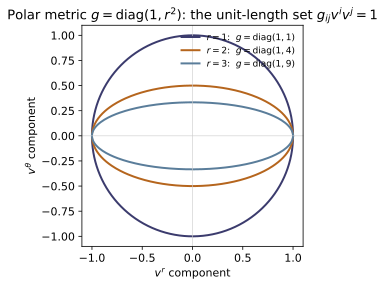
inner) is a circle at $r=1$ but flattens along $v^\theta$ as $r$ grows — a unit step in the $\theta$ component spans arclength $r$, so it 'costs' more length.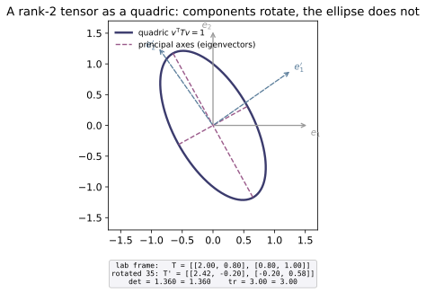
inner), with principal axes along its eigenvectors. Rotating the coordinate frame ($e_i\to e_i'$) changes the component matrix to $T'=R^{\mathsf T}TR$ (see box), but the ellipse is unmoved and the scalars $\det T$ (det_levi_civita) and $\mathrm{tr}\,T$ are invariant — that is what makes $T$ a tensor, not just a matrix.Example problems
Rewrite, then evaluate with the convention: tr(AB)=A_ij B_ji, the matrix–vector product (Ax)_i=A_ij x_j, and δ_ij a_j = a_i. Why must a repeated (summed) index appear exactly twice? Check: matvec.
Each index appearing twice is summed; an index appearing once is free and labels a component of the result:
the last because $\delta_{ij}$ is nonzero only at $j=i$, so it renames the summed index. A summed index must appear exactly twice: it stands for a single contraction (one $\sum$), and the free indices must balance on both sides; a third occurrence would leave the contraction ambiguous and the object would no longer transform as a tensor. matvec(A, x) computes exactly $A_{ij}x_j$ — $j$ summed, $i$ free.
Show (a×b)_i = ε_{ijk} a_j b_k and confirm it equals the elementary determinant formula. Check: cross_via_levi_civita([1,2,3], [4,5,6]) → [−3, 6, −3].
With the totally antisymmetric symbol ($\varepsilon_{123}=+1$), expand the contraction one free index at a time:
and cyclically $(a\times b)_2=a_3b_1-a_1b_3$, $(a\times b)_3=a_1b_2-a_2b_1$ — precisely the cofactor rows of the determinant $\det\!\begin{pmatrix}\hat e_1&\hat e_2&\hat e_3\\ a_1&a_2&a_3\\ b_1&b_2&b_3\end{pmatrix}$. For $a=(1,2,3),\,b=(4,5,6)$: $2\cdot6-3\cdot5=-3$, $3\cdot4-1\cdot6=6$, $1\cdot5-2\cdot4=-3$, giving $[-3,6,-3]$ — exactly cross_via_levi_civita([1,2,3], [4,5,6]).
Prove Σ_i ε_{ijk}ε_{ilm}=δ_{jl}δ_{km}−δ_{jm}δ_{kl}, then use it to derive a×(b×c)=b(a·c)−c(a·b). Check: eps_delta_identity_holds().
The sum $\sum_i\varepsilon_{ijk}\varepsilon_{ilm}$ is nonzero only when $\{j,k\}=\{l,m\}$ with $j\ne k$. If $(l,m)=(j,k)$ the two symbols are equal, product $+1\Rightarrow\delta_{jl}\delta_{km}$; if $(l,m)=(k,j)$ they have opposite sign, product $-1\Rightarrow-\delta_{jm}\delta_{kl}$. Hence $\sum_i\varepsilon_{ijk}\varepsilon_{ilm}=\delta_{jl}\delta_{km}-\delta_{jm}\delta_{kl}$. Apply it to the double cross product, using the cyclic relabel $\varepsilon_{ijk}=\varepsilon_{kij}$:
i.e. $a\times(b\times c)=b\,(a\cdot c)-c\,(a\cdot b)$ — the BAC–CAB rule. eps_delta_identity_holds() verifies the identity over all $j,k,l,m$ and returns True.
Write det A = ε_{i₁…iₙ}A_{1i₁}…A_{niₙ} and evaluate a 3×3 by hand; confirm the inverse via adj/det. Check: det_levi_civita, inverse.
The Levi-Civita definition antisymmetrizes the column index:
For $A=\begin{pmatrix}2&1&0\\1&3&1\\0&1&2\end{pmatrix}$, expanding along row 1, $\det A=2(3\cdot2-1\cdot1)-1(1\cdot2-1\cdot0)+0=2(5)-2=8.$ The inverse follows from Cramer, $A^{-1}=\operatorname{adj}(A)/\det A=C^{\mathsf T}/\det A$ with $C_{ij}=(-1)^{i+j}M_{ij}$; e.g. $(A^{-1})_{11}=C_{11}/8=5/8=0.625$. det_levi_civita(A) returns $8.0$ and inverse(A) returns $[[0.625,-0.25,0.125],[-0.25,0.5,-0.25],[0.125,-0.25,0.625]]$, matching adj/det.
From x=r cosθ, y=r sinθ compute g_ij=(JᵀJ)_ij=diag(1,r²), giving ds²=dr²+r²dθ². Repeat for spherical → diag(1,r²,r²sin²θ). Check: metric_from_map(polar, [r,θ]).
The Cartesian embedding $x(r,\theta)=(r\cos\theta,\,r\sin\theta)$ has Jacobian $J_{ki}=\partial x^k/\partial q^i$,
Then $g_{rr}=\cos^2\theta+\sin^2\theta=1$, $g_{\theta\theta}=r^2\sin^2\theta+r^2\cos^2\theta=r^2$, $g_{r\theta}=-r\sin\theta\cos\theta+r\sin\theta\cos\theta=0$, so $g=\operatorname{diag}(1,r^2)$ and $ds^2=dr^2+r^2d\theta^2$. The identical computation for $x(r,\theta,\phi)$ gives $g=\operatorname{diag}(1,r^2,r^2\sin^2\theta)$. metric_from_map(_polar, [2,0.7]) returns $[[1,0],[0,4]]$ ($r^2=4$), matching.
Show that for a contravariant vector vⁱ the scalar g_ij vⁱvʲ is the same in polar and Cartesian coordinates (the metric "undoes" the coordinate stretch). Check: inner(g, v, v) equals the Cartesian Σ(Vᵏ)² with V=Jv.
The contravariant components transform with the Jacobian, $V^k=(Jv)^k=\dfrac{\partial x^k}{\partial q^i}v^i$. The Cartesian metric is $\delta_{kl}$, so
since the bracket is exactly the induced metric $g_{ij}=(J^{\mathsf T}J)_{ij}$. The metric's $r^2$ precisely undoes the coordinate stretch in $V$. Numerically at $(r,\theta)=(2,0.7)$ with $v=(0.3,0.25)$, inner(g, v, v) $=g_{ij}v^iv^j=0.340000$ equals $\sum_k(V^k)^2=0.340000$ with $V=Jv$ — matching inner.
Run the worked code: cd MA/MA-16_tensor_analysis/code && python3 tensors.py
MA-17 — Differential Geometry [adv]
Mathematics trunk · MA/MA-17_differential_geometry · open in the Teaching Network
Two pillars of geometry on curved spaces. Differential forms & the exterior derivative: in R³, d acting on a 0/1/2-form is grad/curl/div, and the single identity d² = 0 is exactly curl(grad)=0 and div(curl)=0. Riemannian curvature: Christoffel symbols → the Riemann tensor → Ricci → scalar/Gaussian curvature, computed from the metric alone. The showcase is Gauss's Theorema Egregium: the 2-sphere has K=1/a² and the (polar) plane has K=0, intrinsic facts no choice of coordinates can change.
Key equations
Figures
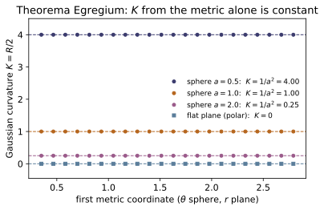
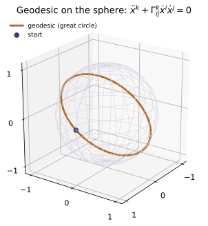
Example problems
Show that, in R³, d on a 0/1/2-form is grad/curl/div, so d²=0 means curl(grad f)=0 and div(curl V)=0. Verify both at a point. Check: curl(gradient(f))(p), divergence(curl(V))(p) ≈ 0.
Realize forms in $\mathbb R^3$: a 0-form $f$ has $df=\partial_i f\,dx^i$ (components $\nabla f$); a 1-form $\omega=V_i\,dx^i$ has $d\omega$ dual to $\nabla\times V$; a 2-form's $d$ is $\nabla\cdot V$. Nilpotency $d^2=0$ then reads
Both hold because $\varepsilon$ is antisymmetric while mixed partials are symmetric: $[\nabla\times\nabla f]_i=\varepsilon_{ijk}\partial_j\partial_k f=0$ and $\nabla\cdot(\nabla\times V)=\varepsilon_{ijk}\partial_i\partial_j V_k=0$ (antisymmetric $\times$ symmetric $=0$). At $p=(0.6,-0.4,0.9)$ the code gives curl(gradient(f))(p) $=[0,0,0]$ and divergence(curl(V))(p) $=0$, both $\approx 0$.
Show dx∧dy = −dy∧dx and hence dx∧dx = 0. Why does this force a p-form to vanish when p exceeds the dimension? (Pen-and-paper.)
The wedge is antisymmetric on 1-forms by definition: $dx^i\wedge dx^j=-dx^j\wedge dx^i$. Setting $j=i$ gives $dx^i\wedge dx^i=-dx^i\wedge dx^i$, hence $dx^i\wedge dx^i=0$ — a repeated differential annihilates. A basis $p$-form $dx^{i_1}\wedge\cdots\wedge dx^{i_p}$ is therefore nonzero only when the indices $i_1,\dots,i_p$ are all distinct. On an $n$-dimensional manifold each index runs over only $n$ values, so for $p>n$ the pigeonhole principle forces a repeat in every term ⇒ every $p$-form vanishes (the top nonzero form is the $n$-form, the volume form). This is the same antisymmetry that makes $\varepsilon_{ij\ldots}=0$ on a repeated index in ~MA-16.
From g=diag(a², a²sin²θ) compute Γᶿ_φφ=−sinθcosθ and Γᶲ_θφ=cotθ by the formula Γᵏ_ij=½gᵏˡ(∂ᵢg_jl+∂ⱼg_il−∂ₗg_ij). Check: christoffel(sphere_metric(1), [theta, phi]).
With $(\theta,\phi)$ and $g=\operatorname{diag}(a^2,\,a^2\sin^2\theta)$, the only nonzero metric derivative is $\partial_\theta g_{\phi\phi}=2a^2\sin\theta\cos\theta$, and $g^{\theta\theta}=1/a^2,\ g^{\phi\phi}=1/(a^2\sin^2\theta)$. Then
At $\theta=0.9$ these are $-0.48692$ and $0.79355$ — exactly the Gam[0][1][1] and Gam[1][0][1] entries returned by christoffel(sphere_metric(1), [theta, phi]).
Compute the Riemann tensor of the unit sphere and show Rᶿ_φθφ=sin²θ, hence the scalar curvature R=2 and K=1. Repeat for radius a → K=1/a². Check: gaussian_curvature_2d(sphere_metric(a), [theta, phi]) ≈ 1/a².
Using the unit-sphere Christoffels $\Gamma^\theta_{\phi\phi}=-\sin\theta\cos\theta,\ \Gamma^\phi_{\theta\phi}=\Gamma^\phi_{\phi\theta}=\cot\theta$ (P3 with $a=1$),
Only two terms survive: $\partial_\theta(-\sin\theta\cos\theta)=\sin^2\theta-\cos^2\theta$ and $-\Gamma^\theta_{\phi\phi}\Gamma^\phi_{\theta\phi}=-(-\sin\theta\cos\theta)\cot\theta=\cos^2\theta$, so $R^\theta{}_{\phi\theta\phi}=\sin^2\theta$. Contracting gives $R_{\phi\phi}=\sin^2\theta,\ R_{\theta\theta}=1$, hence $R=g^{\theta\theta}R_{\theta\theta}+g^{\phi\phi}R_{\phi\phi}=1+\frac1{\sin^2\theta}\sin^2\theta=2$ and $K=R/2=1$. A radius-$a$ sphere scales $g$ by $a^2$, dividing $R$ by $a^2$, so $K=1/a^2$. gaussian_curvature_2d(sphere_metric(2), …) returns $0.25000=1/2^2$, matching $1/a^2$.
Show the polar metric g=diag(1, r²) has all Christoffel symbols arranged so that R=0 — the r² is a coordinate artifact, not curvature. Check: gaussian_curvature_2d(plane_polar_metric(), [r, 0]) ≈ 0.
For $g=\operatorname{diag}(1,r^2)$ in $(r,\theta)$ the only nonzero metric derivative is $\partial_r g_{\theta\theta}=2r$, giving
The curvature component is then
Every component vanishes, so $R=0$ and $K=0$: the $r^2$ merely records that $\partial_\theta$ lengthens with $r$ — a coordinate artifact, not curvature. gaussian_curvature_2d(plane_polar_metric(), [r, 0]) $\approx 0$, matching.
Argue why a sheet of paper (K=0) can be rolled into a cylinder (still K=0) without stretching, but cannot be wrapped on a sphere (K=1/a²) without tearing — and why this is the reason every flat map of the Earth distorts areas. (Pen-and-paper.)
Theorema Egregium states that $K$ is an isometry invariant — computable from the metric (intrinsic distances) alone, independent of the embedding. Rolling a flat sheet ($K=0$) into a cylinder bends it in space but changes no in-surface distance, so the cylinder is also intrinsically flat, $K=0$; the map is an isometry and needs no stretching. A sphere has $K=1/a^2\ne0$; since an isometry must preserve $K$, no distance-preserving map exists between a $K=0$ sheet and a $K\ne0$ sphere — wrapping must stretch or tear. The same obstruction means no planar chart of the Earth can preserve all distances and areas at once: every flat map distorts (Mercator inflates polar areas; equal-area projections shear shapes). This intrinsic-curvature fact is why "gravity is geometry" in ~RE-10.
Run the worked code: cd MA/MA-17_differential_geometry/code && python3 diffgeo.py
MA-18 — Group Theory & Symmetry
Mathematics trunk · MA/MA-18_group_theory · open in the Teaching Network
Finite groups — cyclic Zₙ, dihedral Dₙ, symmetric Sₙ — defined by their elements and operation, with the axioms, element orders, and Lagrange's theorem read straight off the Cayley table; representations (a homomorphism G → matrices); and the two Lie algebras that run physics: so(3) (rotations → angular momentum) and su(2) (the Pauli matrices → spin-½). The recurring theorem is that representations turn abstract group elements into matrices you can multiply, and that the infinitesimal structure is a commutator algebra.
Key equations
Figures

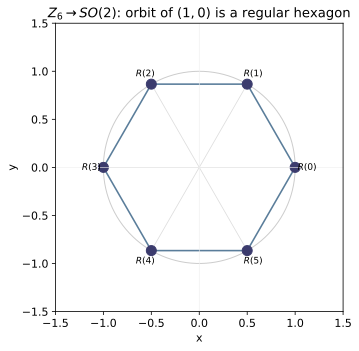
Example problems
Write the Cayley table of Z₄ and of the Klein four-group. Verify closure, identity, inverses, associativity, and that each row/column is a permutation (a Latin square). Check: cyclic_group(4).is_group().
The Cayley table of $\mathbb{Z}_4$ under addition mod 4 is
Identity is $0$; inverses are $0\leftrightarrow0,\ 1\leftrightarrow3,\ 2\leftrightarrow2$; associativity is inherited from integer addition; every row and column lists $0,1,2,3$ once (Latin square). The Klein four-group $V=\{e,a,b,c\}$ satisfies the same axioms but with every non-identity element self-inverse ($a^2=b^2=c^2=e,\ ab=c$), so it is not cyclic (no element of order 4) whereas $\mathbb{Z}_4$ is. Both pass all four axioms, so cyclic_group(4).is_group() returns True.
Show S₃ has order 6 and is non-abelian by exhibiting two permutations that don't commute. List the element orders (1, 2, 3). Check: symmetric_group(3).is_abelian() → False.
$S_3$ permutes $\{0,1,2\}$, so $|S_3|=3!=6$. Take the transpositions $a=(0\,1)\to(1,0,2)$ and $b=(1\,2)\to(0,2,1)$. With the code's convention $(p\circ q)[i]=p[q[i]]$,
so $ab\ne ba$ — $S_3$ is the smallest non-abelian group. Its elements split by order: the identity (order 1), the three transpositions (order 2), and the two 3-cycles $(0\,1\,2),(0\,2\,1)$ (order 3), giving the order list $\{1,2,3\}$. Hence symmetric_group(3).is_abelian() returns False.
Prove the order of a subgroup divides |G| (partition G into cosets). Deduce that a group of prime order is cyclic. Check: symmetric_group(4).subgroup_orders() — all divide 24.
Let $H\le G$. The left cosets $gH=\{gh:h\in H\}$ partition $G$: two cosets are identical or disjoint, and every $g\in gH$ so they cover $G$. Each coset has exactly $|H|$ elements since $h\mapsto gh$ is a bijection. Therefore
In particular the order of any element $a$, being $|\langle a\rangle|$, divides $|G|$. If $|G|=p$ is prime, pick $a\ne e$: its order divides $p$ and exceeds $1$, hence equals $p$, so $\langle a\rangle=G$ and $G\cong\mathbb{Z}_p$ is cyclic. The cyclic-subgroup orders of $S_4$ are $\{1,2,3,4\}$, each dividing $24=|S_4|$, as symmetric_group(4).subgroup_orders() reports.
Realize the dihedral group as permutations of the n vertices. Show D₃ gives all 6 permutations (=S₃) but D₄ gives only 8 of the 24 in S₄. Check: set(dihedral_group(3).elements) == set(symmetric_group(3).elements).
Realize $D_n$ on the $n$ vertices as $n$ rotations $r_k:i\mapsto i+k$ and $n$ reflections $s_k:i\mapsto k-i$ (mod $n$), so $|D_n|=2n$ and $D_n\le S_n$ always. For $n=3$, $|D_3|=2\cdot3=6=3!=|S_3|$; a subgroup of the same finite order is the whole group, so $D_3=S_3$ — all six permutations of three points are triangle symmetries. For $n=4$, $|D_4|=8$ while $|S_4|=24$, so $D_4$ is a proper subgroup: only the 8 permutations preserving the square's edge-adjacency qualify. Thus set(dihedral_group(3).elements) == set(symmetric_group(3).elements) is True, while $D_4$ supplies just 8 of 24.
Show ρ(k)=rotation by 2πk/n is a representation of Zₙ: ρ(a)ρ(b)=ρ(a+b). Why does this make Zₙ a subgroup of SO(2)? Check: cyclic_rep(6); matmul(rep[a],rep[b]) == rep[(a+b)%6].
The planar rotation matrix $R(\theta)=\begin{pmatrix}\cos\theta&-\sin\theta\\ \sin\theta&\cos\theta\end{pmatrix}$ obeys the addition law
using $\cos\alpha\cos\beta-\sin\alpha\sin\beta=\cos(\alpha+\beta)$. Setting $\rho(k)=R(2\pi k/n)$ and using $2\pi$-periodicity, $\rho(a)\rho(b)=R\!\big(2\pi(a+b)/n\big)=\rho\big((a+b)\bmod n\big)$ — a homomorphism $\mathbb{Z}_n\to SO(2)$ with $\rho(0)=I,\ \rho(k)^{-1}=\rho(n-k)$. Its image is the $n$ equally spaced rotations, a cyclic subgroup of $SO(2)$. For $n=6$, $\rho(1)$ is the $60^\circ$ rotation $\begin{pmatrix}0.5&-0.866\\ 0.866&0.5\end{pmatrix}$, and matmul(rep[a],rep[b]) == rep[(a+b)%6] holds for all $a,b$.
For the 3×3 rotation generators verify [Lₓ,L_y]=L_z (and cyclic). Then check the Pauli matrices give [σₓ,σ_y]=2iσ_z — su(2), the double cover of so(3) (spin-½). Check: commutator(so3_generators()[:2]); commutator(pauli()[:2]).
With the antisymmetric generators $L_x,L_y,L_z$ of so3_generators() (rotations about the three axes), direct multiplication gives
and cyclically $[L_y,L_z]=L_x,\ [L_z,L_x]=L_y$ — the algebra $[L_i,L_j]=\varepsilon_{ijk}L_k$ of $so(3)$. For the Pauli matrices $\sigma_x\sigma_y=i\sigma_z$ and $\sigma_y\sigma_x=-i\sigma_z$, so
the $su(2)$ relation $[\sigma_i,\sigma_j]=2i\,\varepsilon_{ijk}\sigma_k$ — the double cover of $so(3)$ (spin-½). These match commutator(so3_generators()[:2]) $=L_z$ and commutator(pauli()[:2]) $=2i\sigma_z$.
Run the worked code: cd MA/MA-18_group_theory/code && python3 groups.py
MA-19 — Probability & Statistics
Mathematics trunk · MA/MA-19_probability_statistics · open in the Teaching Network
The distributions of physics — binomial, Poisson, normal/Gaussian, exponential — with their closed-form moments; the Central Limit Theorem (why the Gaussian is everywhere); error propagation σ_f²=Σ(∂f/∂x_i)²σ_i²; and least-squares line fitting with uncertainties. Two limit bridges: binomial → Poisson (rare events) and binomial → normal (de Moivre–Laplace). Every routine is checked against its analytic answer.
Key equations
Figures
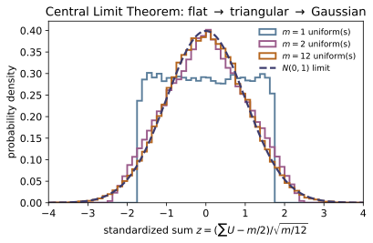
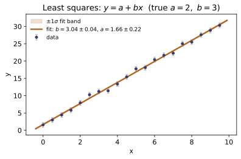
Example problems
For the binomial, derive μ=np and σ²=np(1−p) (e.g. from the generating function or directly). Confirm by summing k·P(k) and (k−μ)²·P(k). Check: sum(k*binomial_pmf(k,12,0.4) for k in range(13)) → 4.8.
Write $q=1-p$ and use $k\binom{n}{k}=n\binom{n-1}{k-1}$:
Similarly $E[X(X-1)]=n(n-1)p^2$, so $E[X^2]=n(n-1)p^2+np$ and
For $n=12,\ p=0.4$: $\mu=12(0.4)=4.8$ and $\sigma^2=12(0.4)(0.6)=2.88$, matching the direct sums sum(k*binomial_pmf(k,12,0.4) for k in range(13)) $=4.8$ and $\sum(k-\mu)^2P(k)=2.88$.
Take n→∞, p→0 with np=λ fixed and show C(n,k)pᵏ(1−p)ⁿ⁻ᵏ → λᵏe⁻λ/k!. Verify the convergence numerically. Check: binomial_pmf(3, 1000, 2/1000) ≈ poisson_pmf(3, 2).
Put $p=\lambda/n$:
As $n\to\infty$ each braced factor tends to its limit, leaving $P(k)\to\lambda^k e^{-\lambda}/k!$ — the Poisson law. Numerically for $k=3,\ \lambda=2,\ n=1000$, the binomial gives $0.18063$ versus $\lambda^3e^{-\lambda}/3!=0.18045$, agreeing to $\sim0.1\%$ — i.e. binomial_pmf(3, 1000, 2/1000) $\approx$ poisson_pmf(3, 2).
Using the CDF ½(1+erf(z/√2)), confirm the 1σ/2σ/3σ probabilities 0.683 / 0.954 / 0.997. Check: normal_cdf(1)-normal_cdf(-1) ≈ 0.6827.
For the standard normal $\Phi(z)=\tfrac12\big(1+\operatorname{erf}(z/\sqrt2)\big)$, the band probability is
since $\operatorname{erf}$ is odd. Evaluating: $\operatorname{erf}(1/\sqrt2)=0.6827$, $\operatorname{erf}(2/\sqrt2)=0.9545$, $\operatorname{erf}(3/\sqrt2)=0.9973$ — the familiar $68.3/95.4/99.7\%$. This matches normal_cdf(1)-normal_cdf(-1) $=0.6827$.
Explain why (Σ of 12 U(0,1)) − 6 is ≈ N(0,1) (match its mean and variance). Sample it and compare the empirical CDF to the normal. Check: sample_uniform_sum(12, N, rng); sample_moments → (0, 1, 0, 0).
Each $U_i\sim U(0,1)$ has $E[U_i]=\tfrac12$ and $\operatorname{Var}(U_i)=\tfrac1{12}$. For $S=\sum_{i=1}^{12}U_i$,
so $S-6$ has mean $0$ and variance $1$. The Central Limit Theorem makes a sum of 12 i.i.d. terms already nearly Gaussian, and symmetry forces skewness $\to0$ and excess kurtosis $\to0$; hence $S-6\approx N(0,1)$. Sampling $40000$ draws gives sample_moments $\approx(0.003,\,0.999,\,-0.015,\,-0.084)\to(0,1,0,0)$, and the empirical CDF tracks normal_cdf to $\sim1\%$.
Derive σ_f²=Σ(∂f/∂xᵢ)²σᵢ². Apply to f=xy (relative errors add in quadrature) and f=x+y (absolute errors add in quadrature). Check: error_propagation(lambda v: v[0]*v[1], [4,5], [0.1,0.2]).
Linearize $f$ about the mean values: $f\approx f(\bar{\mathbf x})+\sum_i\frac{\partial f}{\partial x_i}(x_i-\bar x_i)$. For independent $x_i$ the cross-terms average to zero, so
For $f=xy$: $\partial_x f=y,\ \partial_y f=x$, giving $\sigma_f^2=y^2\sigma_x^2+x^2\sigma_y^2$, i.e. $(\sigma_f/f)^2=(\sigma_x/x)^2+(\sigma_y/y)^2$ — relative errors in quadrature. For $f=x+y$: $\sigma_f^2=\sigma_x^2+\sigma_y^2$. With $x=4\pm0.1,\ y=5\pm0.2$: $f=20$ and $\sigma_f=\sqrt{5^2(0.1)^2+4^2(0.2)^2}=\sqrt{0.89}=0.943$, a relative $0.0472$ — exactly what error_propagation(lambda v: v[0]*v[1], [4,5], [0.1,0.2]) returns.
Derive b=S_xy/S_xx, a=ȳ−bx̄ by minimizing Σ(y−a−bx)². Fit noisy data from y=2+3x and check the recovered slope sits within its quoted uncertainty of 3. Check: least_squares_line(xd, yd).
Minimize $\chi^2=\sum_i(y_i-a-bx_i)^2$. The normal equations are
Substituting $a=\bar y-b\bar x$ into the second gives $\sum_i(x_i-\bar x)(y_i-\bar y)=b\sum_i(x_i-\bar x)^2$, hence
Fitting noisy $y=2+3x$ yields least_squares_line(xd, yd) $=(b,a,\sigma_b,\sigma_a)=(2.988,\,1.992,\,0.032,\,0.177)$; the slope sits $|3-2.988|=0.012<\sigma_b$ from the true $3$ — within its quoted uncertainty.
Run the worked code: cd MA/MA-19_probability_statistics/code && python3 probability.py
MA-20 — Numerical Methods
Mathematics trunk · MA/MA-20_numerical_methods · open in the Teaching Network
The core toolkit, organized around the order of accuracy: quadrature (trapezoid 2nd-order, Simpson 4th-order, Gauss–Legendre), root finding (bisection, Newton, secant), ODE integrators (Euler 1st-order, RK4 4th-order), the power iteration for a dominant eigenvalue, and Lagrange interpolation. The unifying check: a method claiming order p must show error ∝ hᵖ, which the code measures empirically by halving the step and reading the error ratio (→ 2ᵖ).
Figures
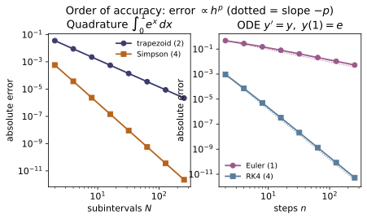
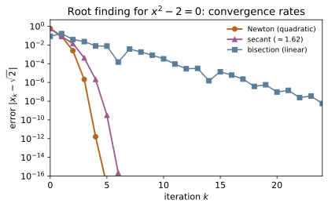
Example problems
For ∫₀¹eˣdx, compute the trapezoid and Simpson errors at N and 2N and show the error ratios are ≈4 and ≈16, i.e. orders 2 and 4. Check: quad_order(simpson, math.exp, 0, 1, math.e-1) ≈ 4.
A method of order $p$ has error $E(h)\approx C\,h^{p}$, so halving the step ($N\to 2N$, $h\to h/2$) shrinks the error by $E(h)/E(h/2)=2^{p}$ and $p=\log_2\!\big(E(N)/E(2N)\big)$. Trapezoid is $p=2$, Simpson $p=4$:
So the ratios are $4=2^2$ and $16=2^4$, giving orders $2$ and $4$ — and quad_order(simpson, math.exp, 0, 1, math.e-1) returns $\log_2 16=3.999\approx4$.
Show the 2-node Gauss rule integrates any cubic on [−1,1] exactly, and the 3-node rule any quintic (degree ≤ 2n−1). Check: gauss_legendre(lambda x: x**3, -1, 1, 2, 1) → 0.
The 2-node rule has nodes $\pm1/\sqrt3$ and weights $1,1$; an $n$-node Gauss rule is exact for degree $\le 2n-1$. Check the monomial basis up to $x^3$:
and the odd powers $\int_{-1}^{1}x\,dx=\int_{-1}^{1}x^3\,dx=0$ are reproduced because the symmetric nodes/weights cancel: $(-\tfrac1{\sqrt3})^3+(\tfrac1{\sqrt3})^3=0$. By linearity every cubic is integrated exactly. Likewise the 3-node rule ($2n-1=5$) is exact through quintics. Hence gauss_legendre(lambda x: x**3, -1, 1, 2, 1) $\to 0$.
Apply Newton to x²−2=0 from x₀=1.5 and tabulate the error each step; confirm it roughly squares (eₖ₊₁≈C eₖ²). Check: newton(lambda x: xx-2, lambda x: 2x, 1.5).
For $f(x)=x^2-2$ the Newton step is $x\leftarrow x-\dfrac{x^2-2}{2x}=\dfrac12\!\left(x+\dfrac2x\right)$. Writing $e_k=x_k-\sqrt2$, a Taylor expansion gives the quadratic law $e_{k+1}=\dfrac{f''(\xi)}{2f'(x_k)}e_k^2=\dfrac{e_k^2}{2x_k}\to\dfrac{e_k^2}{2\sqrt2}$, so $C=1/(2\sqrt2)\approx0.354$. From $x_0=1.5$ the iterates' errors are
each roughly the square of the previous ($0.354\times(8.6\times10^{-2})^2\approx2.6\times10^{-3}=e_1$). This is the iterate history newton(lambda x: xx-2, lambda x: 2x, 1.5) returns, reaching $\sqrt2$ in 4 steps — the digits double each iteration.
Solve cos x = x both ways. Bisection needs a bracket and converges linearly; Newton needs f′ and converges quadratically. Check: bisection, newton on f(x)=cos x − x.
Let $f(x)=\cos x-x$. Since $f(0)=1>0$ and $f(1)=\cos1-1=-0.46<0$, a root is bracketed in $[0,1]$. Bisection halves the bracket each step, killing one bit of error per iteration ($e_{k+1}=\tfrac12 e_k$, linear/order 1). Newton uses $f'(x)=-\sin x-1$:
which squares the error each step. Both converge to the Dottie number
but Newton reaches $10^{-13}$ in 4 steps while bisection needs ~40. So bisection(f,0,1) and newton(f, fp, 0.5) agree at $0.7390851332$, the second far faster.
Integrate y′=y, y(0)=1 to y(1)=e. Measure the order of Euler (≈1) and RK4 (≈4) by halving the step. Why is RK4 worth 4 function evaluations per step? Check: ode_order(rk4, lambda t,y: y, 1, 1, math.e) ≈ 4.
For $y'=y,\ y(0)=1$ the exact solution is $y(1)=e$. Euler $y\leftarrow y+hf$ has local truncation error $O(h^2)$, accumulating to a global error $O(h)$ — order 1. RK4 combines four slopes ($k_1$–$k_4$ in the $1\!:\!2\!:\!2\!:\!1$ weighting) to cancel the Taylor series through $h^4$, giving global error $O(h^4)$ — order 4. Step-halving confirms the exponents:
RK4 is worth its 4 evaluations because halving $h$ cuts its error $16\times$ versus $2\times$ for Euler, so far fewer total steps reach a tolerance. Hence ode_order(rk4, lambda t,y: y, 1, 1, math.e) $\approx4$.
Iterate A=[[2,1,0],[1,2,1],[0,1,2]] on a starting vector and watch it align with the top eigenvector; read λ_max=2+√2 from the Rayleigh quotient. Check: power_iteration(A).
Expand the start vector in eigenvectors, $x_0=\sum c_i v_i$. Then $A^k x_0=\sum c_i\lambda_i^k v_i$, and after normalizing, the term with the largest $|\lambda|$ dominates: $x_k\to v_{\max}$. The eigenvalue is read off by the Rayleigh quotient $\lambda=\dfrac{x^{\mathsf T}Ax}{x^{\mathsf T}x}$. The matrix $\begin{pmatrix}2&1&0\\1&2&1\\0&1&2\end{pmatrix}$ has eigenvalues $2+\sqrt2,\,2,\,2-\sqrt2$ (its characteristic polynomial is $(2-\lambda)\big[(2-\lambda)^2-2\big]$), so the dominant one is
power_iteration(A) converges to $\lambda=3.41421356$, matching $2+\sqrt2$.
Run the worked code: cd MA/MA-20_numerical_methods/code && python3 numerical.py
MA-21 — Dimensional Analysis & Asymptotics
Mathematics trunk · MA/MA-21_dimensional_analysis_asymptotics · open in the Teaching Network
Two complementary "without solving it exactly" tools. Dimensional analysis: the Buckingham Pi theorem builds the dimensionless groups of a problem as the null space of the dimension matrix (so a pendulum's period must be √(L/g) on dimensional grounds alone). Asymptotics: divergent asymptotic series and their optimal truncation (the error shrinks to ~the smallest term near N≈x, then diverges), Stirling's approximation, and regular perturbation series.
Key equations
Figures


Example problems
With {period T, length L, gravity g, mass m} over (M,L,T), write the dimension matrix, find its rank, and conclude there is exactly one dimensionless group Π=gT²/L ⇒ T∝√(L/g). Why does the mass drop out? Check: buckingham_pi(D).
With columns $(T_{\text{period}},L,g,m)$ and rows $(M,L,T)$,
so there are $n-\operatorname{rank}=4-3=1$ dimensionless groups (the null space of $D$). Solving $D\mathbf p=\mathbf 0$ gives $\mathbf p=(2,-1,1,0)$, i.e. $\Pi=T^2L^{-1}g^{1}m^{0}=gT^2/L$. The mass column $(0,0,0,1)$ is the only one with an $M$-entry, so cancelling mass forces its exponent to $0$ — $m$ cannot appear. With a single group the law is $\Pi=\text{const}$, hence $T\propto\sqrt{L/g}$. This is exactly the vector buckingham_pi(D) returns, [[2.0, -1.0, 1.0, -0.0]].
For {ρ, U, L, μ} (density, speed, length, viscosity) over (M,L,T), show the single Pi group is Re=ρUL/μ. Check: buckingham_pi on the dimension matrix; verify is_dimensionless.
In $(M,L,T)$: $\rho=ML^{-3}$, $U=LT^{-1}$, $L=L$, $\mu=ML^{-1}T^{-1}$, so
Solving $D\mathbf p=\mathbf0$ gives $\mathbf p\propto(1,1,1,-1)$, the exponents of $\rho,U,L,\mu$ — i.e. $\Pi=\rho UL/\mu=\mathrm{Re}$. Check the three rows: $M:1{-}1{=}0$, $L:-3{+}1{+}1{+}1{=}0$, $T:-1{+}1{=}0$. buckingham_pi returns the reciprocal vector $(-1,-1,-1,1)=\mu/(\rho UL)=1/\mathrm{Re}$ — the same group — and is_dimensionless(D,[1,1,1,-1]) is True, confirming $\mathrm{Re}=\rho UL/\mu$.
For g(x)=x eˣE₁(x)∼Σ(−1)ᵏk!/xᵏ, show the terms eventually grow, so the series diverges, yet the partial sums approximate g(x) for large x. Check: exp_integral_scaled_asymptotic(x, N) vs exp_integral_scaled_true(x).
The terms are $a_k=(-1)^k k!/x^k$, so the ratio of successive magnitudes is
For $k+1>x$ this exceeds $1$ and the terms grow without bound, so $\sum a_k$ diverges for every fixed $x$. It is nonetheless asymptotic: truncating before the smallest term, the error is bounded by the first omitted term $\sim k!/x^{k}$, which is small for large $x$. At $x=10,\ N=2$: $1-\tfrac1{10}+\tfrac{2}{100}=0.92$ versus the true $g(10)=0.91563$ — a $4\times10^{-3}$ error. So exp_integral_scaled_asymptotic(10, 2) $=0.92$ tracks exp_integral_scaled_true(10) even though the full series diverges.
Show the best truncation stops near the smallest term (N≈x) with residual error ~that term. Confirm adding more terms makes the answer worse. Check: optimal_truncation(8.0) → best N≈8.
From P3 the term magnitude $|a_k|=k!/x^k$ falls while $(k+1)/x<1$, i.e. $k\lesssim x-1$, then rises — so it is smallest near $k\approx x$, and the best truncation stops there. The residual error is of order that smallest term, which by Stirling is $\sim\sqrt{2\pi x}\,e^{-x}$ (at $x=8$, $\sqrt{16\pi}\,e^{-8}\approx2.4\times10^{-3}$). optimal_truncation(8.0) returns best $N=7\approx x=8$ with minimal error $1.2\times10^{-3}$; pushing $N$ past this makes the error grow — the defining signature of an asymptotic (rather than convergent) series.
Derive ln n! ≈ n ln n − n + ½ln(2πn) (e.g. by the integral ∫ln x dx or the saddle point of Γ). Check the 1/(12n) correction against exact ln n!. Check: ln_factorial_stirling(n, 3) vs math.lgamma(n+1).
Start from $\ln n!=\sum_{k=1}^{n}\ln k$ and compare the sum to the integral
The Euler–Maclaurin correction sharpens the constant to $\tfrac12\ln(2\pi n)$ and adds the next term $\tfrac1{12n}$, giving
At $n=5$ this is $4.78751$ versus the exact $\ln\Gamma(6)=4.78749$ (error $2.2\times10^{-5}$), and the $1/(12n)$ term shrinks the error roughly $10\times$ over the two-term form. So ln_factorial_stirling(5, 3) $=4.78751$ matches math.lgamma(6) to five digits.
Solve x²+εx−1=0 perturbatively about x=1: substitute x=1+a₁ε+a₂ε²+… and match powers of ε to get a₁=−½, a₂=⅛. Compare to the exact root. Check: perturbed_root(eps, 2) vs the quadratic formula.
Substitute $x=1+a_1\varepsilon+a_2\varepsilon^2+\cdots$ into $x^2+\varepsilon x-1=0$:
Match orders: $O(\varepsilon):\ 2a_1+1=0\Rightarrow a_1=-\tfrac12$; $O(\varepsilon^2):\ a_1^2+2a_2+a_1=0\Rightarrow \tfrac14+2a_2-\tfrac12=0\Rightarrow a_2=\tfrac18$. Thus
At $\varepsilon=0.2$ this gives $0.905$, versus the exact root $\big(-\varepsilon+\sqrt{\varepsilon^2+4}\big)/2=0.904988$ — so perturbed_root(0.2, 2) $=0.905$ matches the quadratic formula to $O(\varepsilon^3)$.
Run the worked code: cd MA/MA-21_dimensional_analysis_asymptotics/code && python3 asymptotics.py
MA-22 — Topology & Dynamical Systems [adv]
Mathematics trunk · MA/MA-22_topology_dynamical_systems · open in the Teaching Network
Dynamical systems: the linear-stability classification of equilibria from the Jacobian's eigenvalues (saddle / node / spiral / center), and the logistic map's route to chaos — period-doubling, the Lyapunov exponent λ=⟨ln|f′|⟩ (negative on stable cycles, positive in chaos, exactly ln 2 at r=4), and a period-3 window. Topology: the Euler characteristic χ=V−E+F, a topological invariant — 2 for every convex polyhedron (a sphere), 0 for the torus, 2−2g for genus g.
Key equations
Figures
![The logistic map's route to chaos, all from the module's iterators. Top: the bifurcation diagram (logistic_orbit after transients) shows a stable fixed point period-double 2$\to$4$\to$8$\to\cdots$ at the Feigenbaum point $r_\infty\approx3.57$, then chaos pierced by periodic windows (period_of_orbit flags the period-3 window near $r\approx3.83$). Bottom: the Lyapunov exponent $\lambda=\langle\ln|f'|\rangle$ (lyapunov_logistic) is $<0$ on every stable cycle and $>0$ in chaos (orange), touching exactly $\ln 2$ at $r=4$.](MA/MA-22_topology_dynamical_systems/figures/fig1_logistic_bifurcation.svg)

Example problems
For each Jacobian find the eigenvalues and classify the rest point: [[1,0],[0,−1]] (saddle), [[−2,0],[0,−1]] (stable node), [[−1,−2],[2,−1]] (stable spiral), [[0,−1],[1,0]] (center). Check: classify_equilibrium(J).
Eigenvalues come from $\det(J-\lambda I)=\lambda^2-(\operatorname{tr}J)\lambda+\det J=0$; stability is set by the sign of $\operatorname{Re}\lambda$.
$\begin{pmatrix}-1&-2\\2&-1\end{pmatrix}$ has $\operatorname{tr}=-2,\det=5$, disc $=4-20<0$, so $\lambda=-1\pm2i$ ($\operatorname{Re}<0$) $\Rightarrow$ stable spiral; and $\begin{pmatrix}0&-1\\1&0\end{pmatrix}$ has $\operatorname{tr}=0,\det=1$, $\lambda=\pm i$ (purely imaginary) $\Rightarrow$ center. These are exactly the strings classify_equilibrium(J) returns for the four matrices.
State the Poincaré–Bendixson theorem and explain why a bounded 2-D flow can only end at an equilibrium or a limit cycle — so chaos in a continuous system needs ≥3 dimensions (or a discrete map). (Pen-and-paper.)
Poincaré–Bendixson. For a $C^1$ planar flow $\dot{\mathbf x}=f(\mathbf x)$, if a forward orbit stays in a closed bounded region $K$ that contains no equilibrium, then its $\omega$-limit set is a periodic orbit (a limit cycle). Equivalently, a bounded planar trajectory can only end at an equilibrium or approach a closed orbit. The reason is topological: by the Jordan curve theorem a closed orbit in the plane separates inside from outside, and continuity ($C^1$ flows can't cross trajectories) traps the motion — there is no room for the exponential stretch-and-fold that defines chaos. Hence sustained aperiodic (chaotic) motion needs $\ge 3$ continuous dimensions (e.g. the Lorenz system) or a discrete map such as the logistic map below.
Find the fixed point x=1−1/r of x→rx(1−x) and show it is stable iff |f′(x)|<1, i.e. r<3. Check: logistic_orbit(2.5, 0.1, 20, skip=5000) → 1−1/2.5 = 0.6.
A fixed point satisfies $x^\=rx^\(1-x^\)$, so either $x^\=0$ or $1=r(1-x^\)\Rightarrow x^\=1-\tfrac1r$. The multiplier is $f'(x)=r(1-2x)$, and at the nontrivial fixed point
Stability requires $|f'(x^\)|<1$, i.e. $|2-r|<1\Rightarrow 1<r<3$. At $r=2.5$, $x^\=1-1/2.5=0.6$ and $f'(x^\*)=-0.5$ (so $|{\cdot}|<1$, stable). Accordingly logistic_orbit(2.5, 0.1, 20, skip=5000) settles to $0.6$.
Track the attracting period as r increases through 3.2, 3.5, 3.55: observe 2 → 4 → 8 (the Feigenbaum cascade). Check: period_of_orbit(3.2), (3.5), (3.55).
When $r$ crosses $3$, $|f'(x^\*)|=|2-r|>1$ and the fixed point loses stability through a period-doubling (flip) bifurcation: the multiplier passes through $-1$, spawning a stable 2-cycle of $f$ (a fixed point of $f^{2}$). The same instability recurs for $f^{2},f^{4},\dots$, so the attracting period doubles $1\to2\to4\to8\to\cdots$ at bifurcation values $r\approx3,\,3.449,\,3.544,\dots$ accumulating at the Feigenbaum point $r_\infty\approx3.5699$. The detector confirms the cascade:
Compute λ=⟨ln|r(1−2x)|⟩ along the orbit. Show λ<0 on stable cycles and λ>0 at r=4 (= ln 2). Check: lyapunov_logistic(4.0) ≈ 0.693.
Nearby orbits separate as $|\delta x_n|\approx|\delta x_0|\prod_{k}|f'(x_k)|$, so the per-step growth rate is the orbit average
On a stable cycle the $\ln|f'|$ average is negative — lyapunov_logistic(2.5)$=-0.693$, (3.2)$=-0.916$ (orbits converge). At $r=4$ the map is conjugate to the tent map (via $x=\sin^2(\pi\theta/2)$), whose slope is $\pm2$ everywhere, so $\ln|f'|=\ln2$ at every point and $\lambda=\ln2$ exactly. Indeed lyapunov_logistic(4.0)$=0.69315\approx\ln2=0.69315$ — a positive exponent, the signature of chaos.
Verify V−E+F = 2 for all five Platonic solids and explain why (each is a sphere). Build a torus mesh and confirm χ=0=2−2g with g=1. Check: euler_characteristic(V,E,F) on PLATONIC.
With $\chi=V-E+F$, the five Platonic solids give
Every convex polyhedron is homeomorphic to the sphere (radial projection onto $S^2$), and $\chi(S^2)=2$ is a topological invariant — independent of how the surface is meshed. A torus ($g=1$ handle) instead has $\chi=2-2g=0$; a triangulation $(V,E,F)=(9,27,18)$ gives $9-27+18=0$. So euler_characteristic(V,E,F) returns $2$ for every entry of PLATONIC.
Run the worked code: cd MA/MA-22_topology_dynamical_systems/code && python3 topo_dynamics.py